library(dplyr)
library(tidyr)
library(ggplot2)
library(performance)
library(glmmTMB)
library(vegan)
library(ggvegan)
library(FD)
library(picante)
library(gridExtra)Ants species coexistence
Functions
multiple.func <- function(x) {
c(mean = mean(x), sd = sd(x))}Data Cleaning
#see Cleaning.R in scripts folder for data cleaning
wide <- read.csv("Clean Data/ants_wide.csv")
cov <- read.csv("Clean Data/ants.csv")
site_data <- read.csv("Clean Data/sites_joined.csv")
cov <- right_join(site_data, cov, by = c("Site", "month"))
cov <- dplyr::select(cov, 3:10, 14:19, 22:36, 39:41)
#total count of ants
sum(cov$abun)[1] 15519#add ecostress sensor data
eco <- read.csv("Clean Data/ecostress.csv")
eco <- select(eco, 1, 2, 11)
eco <- rename(eco, month = Category, Site = ID, esi = ECO4ESIPTJPL_001_Evaporative_Stress_Index_PT_JPL_ESIavg)
cov <- right_join(eco, cov, by = c("Site", "month"))
#read in foundation plant identity for the sites
shrubs <- read.csv("Clean Data/shrubs.csv")
cov <- right_join(cov, shrubs, by = "Site")
cov$shrub.site <- as.factor(cov$shrub.site)
#read in ndvi and soil data
ndvi <- read.csv("raw data/sites_remotesensing.csv")
ndvi <- select(ndvi, 7:17) %>%
rename(Site = site)
ndvi$Site <- gsub("MoV", "Mov", ndvi$Site)
cov <- right_join(cov, ndvi, by = c("Site", "month"))
cov$sites <- paste(cov$Site, cov$month)#cleaning the raw trait data
traits <- read.csv("raw data/Traits.csv")
#check for spelling mistakes in trait labels
unique(traits$Trait)[1] "Scale bar" "Femur" "Scape" "Mandible length"
[5] "Head length" "Eye length" "Eye width" "Head width"
[9] "Webers" #I don't trust the eye width measurements because they were measured from the front
traits <- filter(traits, Trait != "Eye width")
#unique(traits$Photo)
#extract site IDs from photo names
traits <- separate(traits, Photo, c("Site", "Slide", "Specimen"))Warning: Expected 3 pieces. Additional pieces discarded in 1833 rows [10, 11, 12, 13,
14, 15, 16, 17, 18, 19, 20, 21, 22, 23, 24, 25, 26, 27, 28, 29, ...].traits$Site <- gsub("Papl", "PaPl", traits$Site)
unique(traits$Site)[1] "Aven" "CaS" "CaSl" "Coal" "Lok" "Mov" "PaPl" "SemiT" "SiCr" traits <- traits[-1,]
#remove the double pheidole entry
traits <- traits[-2,]
#need to divide the trait values by weber's body length. I want to do this at the individual level, not dividing means by mean webers
traits <- select(traits, -X, -Label)
traits <- pivot_wider(traits, names_from = Trait, values_from = Measure)
traits <- mutate(traits, Femur.w = Femur/Webers, Scape.w = Scape/Webers, Mandible.w = `Mandible length`/Webers, Headl.w = `Head length`/Webers, Eyel.w = `Eye length`/Webers, Headw.w = `Head width`/Webers)
traits <- pivot_longer(traits, 5:17, names_to = "Trait", values_to = "Measure")
#check for ant species name typoes
unique(traits$X.1) [1] "Pheidole hyatti" "Solenopsis xyloni"
[3] "Dorymyrmex bicolor" "Messor pergandei"
[5] "Forelius pruinosis" "Cyphomyrmex wheeleri"
[7] "Dorymyrmex insanus" "Messor andrei"
[9] "Myrmecocystus" "Pogonomyrmex californicus"
[11] "Temnothorax andrei" #some traits are NA because of damage to the specimen
traits <- drop_na(traits)
#calculate the mean value of the trait for each species at each site (population level trait values)
traits.ag <- group_by(traits, Site, X.1, Trait) %>%
summarise(mean = mean(Measure), sd = sd(Measure))`summarise()` has grouped output by 'Site', 'X.1'. You can override using the
`.groups` argument.#create a data frame of the mean values for each species across all sites (species level trait values)
traits.sp <- group_by(traits, X.1, Trait) %>%
summarise(mean = mean(Measure), sd = sd(Measure))`summarise()` has grouped output by 'X.1'. You can override using the `.groups`
argument.Calculations
#convert to presence absence
long.pres <- pivot_longer(wide, 2:14, names_to = "species", values_to = "count")
long.pres <- mutate(long.pres, count.bin = ifelse(count >= 1, 1, 0))
#get total abundance per trap
long.pres <- group_by(long.pres, uniID) %>%
mutate(total = sum(count.bin))
#calculate relative abundances
long.pres <- long.pres %>% mutate(rel.abun = count.bin/total)
traits.ag <- rename(traits.ag, species = X.1)
traits.ag$species <- gsub(" ", "", traits.ag$species)
#add sites to long
long.pres <- cov %>% select(Site, uniID) %>% right_join(long.pres, . , by = 'uniID')
#this adds NA traits to 0 abundances - species isn't found at pitfall or site#make a presence/absence pitfall trap data frame
spe.bin <- long.pres
spe.bin <- select(spe.bin, 2, 3, 5)
spe.bin <- pivot_wider(spe.bin, names_from = species, values_from = count.bin)
spe.bin <- select(spe.bin, -11, -12)PCA
Traits - Invidividuals
# I want the PCA on traits
# make it wide again
traits.wide <- pivot_wider(traits, names_from = Trait, values_from = Measure)
#keep only weber length standardized traits
traits.wide <- select(traits.wide, 11:17)
traits.wide <- drop_na(traits.wide)
traits.st <- decostand(traits.wide, method = "standardize")
traits.pca <- rda(traits.st)
#summary(traits.pca)
biplot(traits.pca, xlab = "PCA 33.9%", ylab = "PCA 32.9%")
#PC3 is ~15%Populations
trait.pop <- traits.ag
trait.pop$spepop <- paste(trait.pop$species, trait.pop$Site)
trait.pop <- ungroup(trait.pop) %>% select(spepop, Trait, mean)
trait.pop <- pivot_wider(trait.pop, names_from = Trait, values_from = mean)
trait.pop <- select(trait.pop, 1, 3, 5, 8, 9, 11, 13, 14)
trait.pop.st <- select(trait.pop, -1) %>% decostand(method = "standardize")
#rename the column names for the figure
colnames(trait.pop.st) <- c("Eye length", "Femur length", "Head \n length", "Head\n Width", "Mandible\n length", "Scape length", "Weber's \nbody length")
trait.pop.pca <- rda(trait.pop.st)
summary(trait.pop.pca)
Call:
rda(X = trait.pop.st)
Partitioning of variance:
Inertia Proportion
Total 7 1
Unconstrained 7 1
Eigenvalues, and their contribution to the variance
Importance of components:
PC1 PC2 PC3 PC4 PC5 PC6 PC7
Eigenvalue 2.5070 2.2584 1.1770 0.7987 0.15458 0.055570 0.04872
Proportion Explained 0.3581 0.3226 0.1681 0.1141 0.02208 0.007939 0.00696
Cumulative Proportion 0.3581 0.6808 0.8489 0.9630 0.98510 0.993040 1.00000
Scaling 2 for species and site scores
* Species are scaled proportional to eigenvalues
* Sites are unscaled: weighted dispersion equal on all dimensions
* General scaling constant of scores: 4.325308
Species scores
PC1 PC2 PC3 PC4 PC5 PC6
Eye length -0.1767 -1.0244 -0.1420 1.2457 0.10477 0.093395
Femur length -0.1993 -1.4027 0.7577 -0.1532 0.05924 -0.170440
Head \n length 1.5386 -0.2189 -0.1218 0.1530 -0.44827 0.063381
Head\n Width 1.4624 0.3105 0.4858 0.3491 0.08221 -0.215250
Mandible\n length 1.3472 -0.6678 0.1603 -0.4818 0.33976 0.195884
Scape length -0.3352 -1.5033 -0.1533 -0.4137 -0.23448 -0.004772
Weber's \nbody length -0.4429 0.4108 1.5004 0.1038 -0.14328 0.148333
Site scores (weighted sums of species scores)
PC1 PC2 PC3 PC4 PC5 PC6
sit1 -1.25743 1.17003 -1.006316 0.4318 0.16247 1.08859
sit2 0.07348 -0.63307 0.001587 0.9435 0.55676 -0.15860
sit3 0.10035 0.28019 -0.835489 0.2037 -0.78715 -0.68807
sit4 -0.11843 0.41555 1.059308 0.7186 0.44925 -1.15434
sit5 -0.31570 -0.68016 -0.282304 -0.5964 0.13460 0.37362
sit6 0.74161 0.50801 -0.400498 -0.6450 0.59087 0.83737
sit7 -0.54973 -0.12228 -0.018679 0.4422 0.72323 -0.03024
sit8 0.08209 -0.45712 -0.331333 0.4141 -0.17494 -1.02519
sit9 0.03929 0.19970 -0.609124 0.4344 -0.48653 -1.25146
sit10 -0.39156 0.88290 1.405785 -0.2830 -0.94520 0.26177
sit11 0.52052 -0.46346 0.422658 0.9600 -0.35682 -0.41823
sit12 -0.61492 -0.10196 0.740425 -0.3379 0.37339 0.31994
sit13 -0.16380 -0.85734 -0.102693 -0.7965 0.52466 0.34867
sit14 1.30768 -0.00861 -0.007875 -0.4919 0.18310 -0.56861
sit15 0.26887 -0.77746 0.185309 0.8498 0.27848 0.29414
sit16 -0.03945 -0.40208 0.015923 0.6335 0.13965 0.32880
sit17 -0.25350 0.92686 1.331797 -0.3559 -0.30705 0.24633
sit18 -0.76018 0.00121 0.581893 -0.3685 0.31250 0.69682
sit19 -0.26309 -0.84188 -0.252197 -0.6362 -0.58082 -0.24173
sit20 1.21189 0.13299 1.307884 0.5640 0.69689 0.24658
sit21 0.92381 0.33488 -0.110765 -0.9947 0.98653 0.28583
sit22 -1.10418 1.40531 -0.725630 0.1821 -0.02269 -1.00948
sit23 0.02086 -0.50581 0.026615 0.8573 0.31400 -0.06155
sit24 0.19997 -0.55557 -0.361050 0.3125 0.73116 1.20797
sit25 -0.38207 -0.74295 -0.219071 -0.6894 -0.40849 -0.12945
sit26 0.61948 0.58785 -0.414733 -0.4978 -0.04579 -0.55950
sit27 -0.22399 -0.15329 -0.086018 0.6899 0.04607 -0.06113
sit28 0.74740 -0.29243 0.913310 0.7581 -0.41624 0.08193
sit29 -0.64059 -0.31894 0.299796 -0.2970 0.43947 0.41555
sit30 -0.52138 -0.61739 -0.397568 -0.4950 -0.29021 -0.51933
sit31 0.75207 0.53673 -0.339210 -0.5093 -0.32128 0.07954
sit32 0.02154 -0.56995 -0.190266 0.8382 0.04218 0.52305
sit33 0.35216 -0.05693 0.725188 0.5584 -0.34317 0.01420
sit34 -0.72746 0.12963 0.457274 -0.3425 -0.41348 -0.03825
sit35 -0.36985 -0.68566 -0.154910 -0.8299 0.17622 0.13870
sit36 1.07301 0.27959 -0.146515 -0.4081 -0.10280 -0.50485
sit37 -0.28488 0.51805 -0.521273 0.1924 0.38419 -0.94546
sit38 -0.29382 0.99462 1.435078 -0.2762 -0.88692 0.50829
sit39 -0.59135 -0.25519 0.328696 -0.2345 0.44186 0.17430
sit40 -0.41548 -0.61960 -0.172560 -0.6884 -0.32450 0.12250
sit41 0.72063 0.64465 -0.439537 -0.6063 -0.08582 0.56966
sit42 0.65457 0.62725 -1.222604 1.0584 -2.21323 1.75579
sit43 0.09375 -0.41415 -0.101720 0.6696 0.17689 0.09258
sit44 -0.75541 0.18755 0.560996 -0.3577 -0.67055 -0.80330
sit45 -0.11440 -0.81146 -0.236674 -0.6943 -0.57049 0.62003
sit46 0.64722 0.60986 -0.238973 -0.8057 0.88478 -0.37328
sit47 -0.92769 1.15961 -0.717894 0.6739 1.57847 0.34707
sit48 -0.13297 -0.40093 -0.099493 0.7395 0.10783 -0.15132
sit49 0.20079 0.28479 -0.629766 0.1702 -0.10950 -0.63534
sit50 -0.28079 -0.88353 -0.225329 -0.6004 -0.89400 -0.58909
sit51 1.12105 0.41137 -0.201453 -0.4573 0.32213 -0.06183pcplot1 <- autoplot(trait.pop.pca, xlab = "PCA Axis 1 (35.8%)", ylab = "PCA Axis 2 (32.2%)") + theme(panel.grid.major = element_blank(), panel.grid.minor = element_blank(), panel.background = element_rect(colour = "black", size=1, fill = NA), axis.line = element_line(colour = "black")) + theme(legend.position = "none") + xlim(-1.5, 1.8)Warning: The `size` argument of `element_rect()` is deprecated as of ggplot2 3.4.0.
ℹ Please use the `linewidth` argument instead.pcplot1
#PCA3 ~ 16%Sites - site-level
env2 <- select(cov, 3:5, 8, 12:15, 37:43, sites) %>% drop_na() %>% distinct()
env2_sitelabels <- env2$sites
env2 <- select(env2, -sites)
#standardize to mean of zero etc
env.d2 <- decostand(env2, method = "standardize")
env.pca2 <- rda(env.d2)
a <- summary(env.pca2)
b <- a$cont$importance
prop1 <- b[2,1] * 100
prop1 <- round(prop1, digits = 2)
prop2 <- b[2,2] * 100
prop2 <- round(prop2, digits = 2)
#summary(env.pca2)
#autoplot(env.pca2, xlab = paste("PCA", prop1), ylab = paste("PCA", prop2))
#sitescores <- scores(env.pca2, c(1,2, 3), 'sites')
envreduce <- select(env2, -esi, -arid, -10, -12, -13, -14)
env.reduce <- decostand(envreduce, method = "standardize")
colnames(env.reduce) <- c("Mean Cover", "Variation Cover", "Mean Veg Height", "Mean Annual \n Temperature", "Mean Annual \n Precipitation", "Maximum \n Temperature", "NDVI", "Mean Soil Temp", "Range Soil Temp")
env.pcareduce <- rda(env.reduce)
a <- summary(env.pcareduce)
b <- a$cont$importance
prop1 <- b[2,1] * 100
prop1 <- round(prop1, digits = 2)
prop2 <- b[2,2] * 100
prop2 <- round(prop2, digits = 2)
summary(env.pcareduce)
Call:
rda(X = env.reduce)
Partitioning of variance:
Inertia Proportion
Total 9 1
Unconstrained 9 1
Eigenvalues, and their contribution to the variance
Importance of components:
PC1 PC2 PC3 PC4 PC5 PC6 PC7
Eigenvalue 4.3345 1.5521 1.3003 0.74383 0.51194 0.29397 0.20677
Proportion Explained 0.4816 0.1725 0.1445 0.08265 0.05688 0.03266 0.02297
Cumulative Proportion 0.4816 0.6541 0.7985 0.88118 0.93807 0.97073 0.99370
PC8 PC9
Eigenvalue 0.051576 0.0050793
Proportion Explained 0.005731 0.0005644
Cumulative Proportion 0.999436 1.0000000
Scaling 2 for species and site scores
* Species are scaled proportional to eigenvalues
* Sites are unscaled: weighted dispersion equal on all dimensions
* General scaling constant of scores: 3.911145
Species scores
PC1 PC2 PC3 PC4 PC5
Mean Cover -0.1994 -1.18939 0.20134 0.03781 0.19724
Variation Cover 0.9554 0.52540 -0.12051 0.16815 -0.54976
Mean Veg Height 0.5946 -0.03471 0.78897 -0.79956 -0.15408
Mean Annual \n Temperature 1.2517 -0.18078 -0.20057 0.03157 0.08080
Mean Annual \n Precipitation -1.1162 0.49376 0.32654 -0.13258 0.07554
Maximum \n Temperature 1.0813 -0.63138 0.01782 0.10157 -0.26002
NDVI 0.3127 0.18047 0.98632 0.73604 0.10852
Mean Soil Temp 0.9855 0.36868 -0.47134 -0.06050 0.53397
Range Soil Temp 1.0052 0.32019 0.43635 -0.14480 0.35849
PC6
Mean Cover -0.29603
Variation Cover -0.30644
Mean Veg Height 0.20243
Mean Annual \n Temperature 0.08483
Mean Annual \n Precipitation -0.18860
Maximum \n Temperature 0.03410
NDVI 0.18986
Mean Soil Temp 0.12931
Range Soil Temp -0.42478
Site scores (weighted sums of species scores)
PC1 PC2 PC3 PC4 PC5 PC6
sit1 0.64351 -0.5007 -0.725438 -0.7455 -0.810918 -0.14371
sit2 -0.74194 0.5412 0.108352 -0.1507 0.206381 -0.08248
sit3 -1.20898 0.7029 -0.331662 -0.0428 0.490721 -0.74433
sit4 0.56856 0.3548 0.266016 0.2545 -1.381324 0.36172
sit5 0.51013 -0.5677 -0.132058 -1.3162 1.245698 0.41372
sit6 -0.28201 -0.5827 -0.649898 0.4630 0.427861 1.40192
sit7 -0.74000 -1.2969 1.565620 -0.4170 0.172264 -0.45283
sit8 0.94709 0.8571 -0.801954 0.6558 0.591111 -0.91391
sit9 -0.19825 -0.6408 -0.893368 0.7572 -0.530083 -0.24337
sit10 0.83712 -0.9331 0.743799 -0.4717 1.040020 -0.92332
sit11 -0.84470 0.8108 0.370045 -0.7902 0.063900 0.14024
sit12 -1.02926 1.4030 0.326255 -0.6496 0.289992 1.53975
sit13 0.32920 -0.7569 0.557304 0.4144 0.006087 0.11699
sit14 0.43428 -0.4409 -0.569616 -1.0108 1.316768 0.22559
sit15 -0.14377 -0.3449 -0.143868 1.6282 0.179381 1.31407
sit16 -0.67067 -0.2409 0.431817 -0.9580 -1.004252 -0.54094
sit17 1.22700 0.6444 1.009521 0.5959 0.499612 0.12615
sit18 -0.16853 -0.4159 -1.780906 -1.2715 -1.386545 -0.57888
sit19 1.36348 0.6556 1.488194 -0.2852 -1.007324 0.11247
sit20 -0.71362 0.9359 -0.047458 0.7364 -0.116222 -0.43942
sit21 -1.06529 0.7318 0.141801 0.4131 0.650523 -1.31995
sit22 0.32691 -0.5166 -0.009163 0.6818 -0.351307 -0.53919
sit23 0.68249 0.6844 -0.337589 -0.8470 0.243426 1.22871
sit24 -0.35134 -1.1415 -0.763602 0.9214 0.753526 0.28158
sit25 -0.79586 -0.8457 1.007258 0.4688 -0.589646 -0.17102
sit26 1.05612 1.0050 -0.663457 0.5646 0.166269 -1.03328
sit27 0.02832 -0.1018 -0.165942 0.4009 -1.165918 0.86371pcplot2 <- autoplot(env.pcareduce , xlab = paste("PCA Axis 1 (", prop1, "%)", sep = ""), ylab = paste("PCA Axis 2 (", prop2, "%)", sep = "")) + xlim(-1.5, 1.6) + theme(panel.grid.major = element_blank(), panel.grid.minor = element_blank(), panel.background = element_rect(colour = "black", size=1, fill = NA), axis.line = element_line(colour = "black")) + theme(legend.position = "none") + theme(text=element_text(size=13))
pcplot2
sitescores <- scores(env.pcareduce, c(1,2), display = 'sites')
sitescores <- as.data.frame(cbind(sitescores, env2_sitelabels))#Figure 2
gA <- ggplotGrob(pcplot1)
gB <- ggplotGrob(pcplot2)
grid::grid.newpage()
grid::grid.draw(rbind(gA, gB))
Functional dispersion
#need a species by trait matrix, but I want to use the population means
#make species name the name + site
site.pop <- select(cov, 1, 2, 31) %>% left_join(long.pres, ., by = 'uniID')
#count uniID per site and month
counts <- site.pop %>% group_by(Site.x, month, uniID) %>% count()
counts <- counts %>% group_by(Site.x, month) %>% count()
site.pop <- site.pop %>% group_by(Site.x, month, species) %>% summarize(total = sum(count.bin)) `summarise()` has grouped output by 'Site.x', 'month'. You can override using
the `.groups` argument.site.pop <- left_join(site.pop, counts, by = c("Site.x", "month"))
#dividing by the number of pitfalls because it differs (some were disturbed)
site.pop <- mutate(site.pop, pit.abun = total/n)
site.pop <- select(site.pop, 1:3, 6)
site.pop$site.name <- paste(site.pop$Site.x, site.pop$month)
site.pop$spepop <- paste(site.pop$species, site.pop$Site.x)
site.pop <- site.pop %>% ungroup() %>% select(4:6)
wide.pop <- pivot_wider(site.pop, names_from = spepop, values_from = pit.abun)
wide.pop[is.na(wide.pop)] <- 0
sites <- wide.pop$site.name
#there are no trait measurements for species that are absent from a site
wide.pop <- ungroup(wide.pop) %>% select(-site.name)
wide.pop <- wide.pop[which(colSums(wide.pop) !=0)]
wide.pop <- cbind(sites, wide.pop)
row.names(wide.pop) <- wide.pop$sites
wide.pop <- select(wide.pop, -sites)
#remove the two solenopsis singletons - no trait measuremnts
wide.pop <- select(wide.pop, -36, -42)
#check to ensure names are matched correctly between dataframes
spec <- colnames(wide.pop)
trait.pop <- as.data.frame(trait.pop)
row.names(trait.pop) <- trait.pop$spepop
trait.pop <- select(trait.pop, -spepop)
all.equal(spec, row.names(trait.pop))[1] TRUENull model/SES calculation
resultsRandom <- readRDS("Clean Data/objects/FDispRandom_sites.rds")
obsFDis <- dbFD(trait.pop, wide.pop, w.abun = TRUE)$FDisFEVe: Could not be calculated for communities with <3 functionally singular species.
FRic: To respect s > t, FRic could not be calculated for communities with <3 functionally singular species.
FRic: Dimensionality reduction was required. The last 5 PCoA axes (out of 7 in total) were removed.
FRic: Quality of the reduced-space representation = 0.6807776
FDiv: Could not be calculated for communities with <3 functionally singular species. meanNull3 <- rowMeans(resultsRandom)
ES3 <- obsFDis - meanNull3
sdNull3 <- apply(resultsRandom, 1, sd)
SES3 <- ES3 / sdNull3
SES_dis <- data.frame(SES3)
SES_dis$sites <- row.names(SES_dis)
#make random values negative
resultsRandom_neg <- resultsRandom * -1
diff <- sweep(resultsRandom_neg, 1, obsFDis, "+")
diff_ses <- sweep(diff, 1, meanNull3, "/")
diff_ses_ag <- apply(diff_ses, 1, multiple.func)
diff_ses_ag <- t(diff_ses_ag)
diff_ses_ag <- cbind(diff_ses_ag, SES_dis$sites)
#get rid of last row
diff_ses_ag <- head(diff_ses_ag, 27)
test <- cbind(sdNull3, diff_ses_ag)
test <- as.data.frame(test)
test$sd <- as.numeric(test$sd)
test <- rename(test, sdrand = sdNull3)
test$sdrand <- as.numeric(test$sdrand)
cor.test(test$sd, test$sdrand)
Pearson's product-moment correlation
data: test$sd and test$sdrand
t = 15.092, df = 25, p-value = 4.57e-14
alternative hypothesis: true correlation is not equal to 0
95 percent confidence interval:
0.8904620 0.9768807
sample estimates:
cor
0.9492583 #join site-level environmental measurements to data
cov$sites <- paste(cov$Site, cov$month)
SES <- select(cov, 1:15, shrub.site, sites, 37:43) %>% distinct() %>% left_join(SES_dis, by = "sites")Functional dispersion and PC gradient
SES2 <- cbind(SES, sitescores)
SES2$PC1 <- as.numeric(SES2$PC1)
SES2$PC2 <- as.numeric(SES2$PC2)
#need to add raw FDisp score
mean(SES$SES3)[1] 0.5827153t.test(SES$SES3)
One Sample t-test
data: SES$SES3
t = 3.5237, df = 26, p-value = 0.001597
alternative hypothesis: true mean is not equal to 0
95 percent confidence interval:
0.2427901 0.9226405
sample estimates:
mean of x
0.5827153 library(glmmTMB)
m1 <- glmmTMB(SES3 ~ PC1 + PC2 + (1|Site), data = SES2)
summary(m1) Family: gaussian ( identity )
Formula: SES3 ~ PC1 + PC2 + (1 | Site)
Data: SES2
AIC BIC logLik deviance df.resid
70.4 76.9 -30.2 60.4 22
Random effects:
Conditional model:
Groups Name Variance Std.Dev.
Site (Intercept) 8.842e-10 2.973e-05
Residual 5.480e-01 7.403e-01
Number of obs: 27, groups: Site, 9
Dispersion estimate for gaussian family (sigma^2): 0.548
Conditional model:
Estimate Std. Error z value Pr(>|z|)
(Intercept) 0.5827 0.1425 4.090 4.31e-05 ***
PC1 -0.5067 0.1893 -2.677 0.00743 **
PC2 -0.1760 0.1893 -0.930 0.35239
---
Signif. codes: 0 '***' 0.001 '**' 0.01 '*' 0.05 '.' 0.1 ' ' 1performance(m1)Random effect variances not available. Returned R2 does not account for random effects.# Indices of model performance
AIC | AICc | BIC | R2 (cond.) | R2 (marg.) | RMSE | Sigma
------------------------------------------------------------------
70.384 | 73.241 | 76.863 | | 0.236 | 0.740 | 0.740m2 <- glmmTMB(SES3 ~ PC1 + PC2, data = SES2)
summary(m2) Family: gaussian ( identity )
Formula: SES3 ~ PC1 + PC2
Data: SES2
AIC BIC logLik deviance df.resid
68.4 73.6 -30.2 60.4 23
Dispersion estimate for gaussian family (sigma^2): 0.548
Conditional model:
Estimate Std. Error z value Pr(>|z|)
(Intercept) 0.5827 0.1425 4.090 4.31e-05 ***
PC1 -0.5067 0.1893 -2.677 0.00743 **
PC2 -0.1760 0.1893 -0.930 0.35239
---
Signif. codes: 0 '***' 0.001 '**' 0.01 '*' 0.05 '.' 0.1 ' ' 1performance(m1)Random effect variances not available. Returned R2 does not account for random effects.# Indices of model performance
AIC | AICc | BIC | R2 (cond.) | R2 (marg.) | RMSE | Sigma
------------------------------------------------------------------
70.384 | 73.241 | 76.863 | | 0.236 | 0.740 | 0.740AIC(m1, m2) df AIC
m1 5 70.38389
m2 4 68.38389fit1 <- lm(SES3 ~ PC1, data = SES2)
summary(fit1)
Call:
lm(formula = SES3 ~ PC1, data = SES2)
Residuals:
Min 1Q Median 3Q Max
-2.2155 -0.2442 0.0500 0.4122 1.6028
Coefficients:
Estimate Std. Error t value Pr(>|t|)
(Intercept) 0.5827 0.1504 3.874 0.000684 ***
PC1 -0.5067 0.1998 -2.536 0.017849 *
---
Signif. codes: 0 '***' 0.001 '**' 0.01 '*' 0.05 '.' 0.1 ' ' 1
Residual standard error: 0.7816 on 25 degrees of freedom
Multiple R-squared: 0.2046, Adjusted R-squared: 0.1728
F-statistic: 6.43 on 1 and 25 DF, p-value: 0.01785ggplot(SES2, aes(PC1, SES3)) + geom_point() + stat_smooth(method = "lm") + xlab("PC1") + theme(panel.grid.major = element_blank(), panel.grid.minor = element_blank(),
panel.background = element_rect(colour = "black", size=1, fill = NA), axis.line = element_line(colour = "black")) + ylab("SES Functional dispersion")+ geom_label(aes(x = 0.75, y = 2),vjust=1, hjust = 0,
label = paste("Adj r2 = ",signif(summary(fit1)$adj.r.squared, 3),
" \nP =",signif(summary(fit1)$coef[2,4], 3))) + geom_hline(yintercept = 0, linetype = "dashed") `geom_smooth()` using formula = 'y ~ x'
SES2 <- mutate(SES2, shrub = ifelse(shrub.site == "atriplex", "shrub", (ifelse(shrub.site == "ephedra", "shrub", "open"))))
m <- glmmTMB(SES3 ~shrub + (1|Site), data = SES2)
summary(m) Family: gaussian ( identity )
Formula: SES3 ~ shrub + (1 | Site)
Data: SES2
AIC BIC logLik deviance df.resid
74.3 79.5 -33.2 66.3 23
Random effects:
Conditional model:
Groups Name Variance Std.Dev.
Site (Intercept) 0.1454 0.3813
Residual 0.5648 0.7515
Number of obs: 27, groups: Site, 9
Dispersion estimate for gaussian family (sigma^2): 0.565
Conditional model:
Estimate Std. Error z value Pr(>|z|)
(Intercept) 0.62506 0.33349 1.874 0.0609 .
shrubshrub -0.06351 0.40843 -0.156 0.8764
---
Signif. codes: 0 '***' 0.001 '**' 0.01 '*' 0.05 '.' 0.1 ' ' 1SES2 %>% group_by(shrub) %>% summarize(mean = mean(SES3), sd = sd(SES3))# A tibble: 2 × 3
shrub mean sd
<chr> <dbl> <dbl>
1 open 0.625 0.841
2 shrub 0.562 0.892Taxonomic diversity
Species richness ~ PC1
#use long pres
#join month by identifier
#remove the two singletons?
alpha <- select(cov, uniID, month) %>% right_join(long.pres, by = "uniID")
alpha$sites <- paste(alpha$Site, alpha$month)
alpha <- filter(alpha, species != "Solenopsisaurea" & species != "Solenopsismolesta")
alpha <- select(alpha, sites, species, count.bin)
alpha <- distinct(alpha)
alpha <- alpha %>% group_by(sites) %>% summarise(richness = sum(count.bin))
alpha <- right_join(alpha, SES2, by = "sites")
#same GLM or GLMM
m1 <- glmmTMB(richness ~ PC1 + PC2 + (1|Site), family = "poisson", data = alpha)
summary(m1) Family: poisson ( log )
Formula: richness ~ PC1 + PC2 + (1 | Site)
Data: alpha
AIC BIC logLik deviance df.resid
104.8 110.0 -48.4 96.8 23
Random effects:
Conditional model:
Groups Name Variance Std.Dev.
Site (Intercept) 1.517e-10 1.232e-05
Number of obs: 27, groups: Site, 9
Conditional model:
Estimate Std. Error z value Pr(>|z|)
(Intercept) 1.3996 0.0962 14.549 <2e-16 ***
PC1 -0.1644 0.1245 -1.321 0.187
PC2 0.1437 0.1248 1.151 0.250
---
Signif. codes: 0 '***' 0.001 '**' 0.01 '*' 0.05 '.' 0.1 ' ' 1check_overdispersion(m1)# Overdispersion test
dispersion ratio = 0.392
Pearson's Chi-Squared = 9.015
p-value = 0.996No overdispersion detected.performance(m1)Random effect variances not available. Returned R2 does not account for random effects.# Indices of model performance
AIC | AICc | BIC | R2 (cond.) | R2 (marg.) | RMSE | Sigma | Score_log | Score_spherical
---------------------------------------------------------------------------------------------------
104.781 | 106.599 | 109.964 | | 0.114 | 1.216 | 1.000 | -1.792 | 0.188m2 <- glmmTMB(richness ~ PC1 + PC2, family = "poisson", data = alpha)
summary(m2) Family: poisson ( log )
Formula: richness ~ PC1 + PC2
Data: alpha
AIC BIC logLik deviance df.resid
102.8 106.7 -48.4 96.8 24
Conditional model:
Estimate Std. Error z value Pr(>|z|)
(Intercept) 1.3996 0.0962 14.549 <2e-16 ***
PC1 -0.1644 0.1245 -1.321 0.187
PC2 0.1437 0.1248 1.151 0.250
---
Signif. codes: 0 '***' 0.001 '**' 0.01 '*' 0.05 '.' 0.1 ' ' 1AIC(m1, m2) df AIC
m1 4 104.7805
m2 3 102.7805m3 <- glm(richness ~ month, family = "poisson", data = alpha)
summary(m3)
Call:
glm(formula = richness ~ month, family = "poisson", data = alpha)
Coefficients:
Estimate Std. Error z value Pr(>|z|)
(Intercept) 1.35812 0.16903 8.035 9.38e-16 ***
monthJuly 0.22884 0.22649 1.010 0.312
monthSept -0.08961 0.24458 -0.366 0.714
---
Signif. codes: 0 '***' 0.001 '**' 0.01 '*' 0.05 '.' 0.1 ' ' 1
(Dispersion parameter for poisson family taken to be 1)
Null deviance: 12.593 on 26 degrees of freedom
Residual deviance: 10.526 on 24 degrees of freedom
AIC: 103.96
Number of Fisher Scoring iterations: 4car::Anova(m3)Analysis of Deviance Table (Type II tests)
Response: richness
LR Chisq Df Pr(>Chisq)
month 2.0664 2 0.3559tb <- table(alpha$richness, alpha$sites)
chisq.test(alpha$richness, alpha$Site)Warning in chisq.test(alpha$richness, alpha$Site): Chi-squared approximation
may be incorrect
Pearson's Chi-squared test
data: alpha$richness and alpha$Site
X-squared = 43.714, df = 40, p-value = 0.3166Accumulation curves
spec <-wide
sitespec <- left_join(wide, cov, by = "uniID")
sitespec <- select(sitespec, 2:14, 17)
#par(mfrow=c(5,2))
all <- select(sitespec, -Site)
#xi <- specaccum(all, method = "rarefaction", permutations = 100)
xs <- specaccum(all, method = "random", permutations = 1000)
#plot(xi, xlab = "Number of Individuals", ylab = "Species Richness")
plot(xs, xlab = "Number of Pitfall Samples", ylab = "Species Richness", ci.type = "line", cex.lab = 1.5)
title("All Sites Pooled", adj = 0)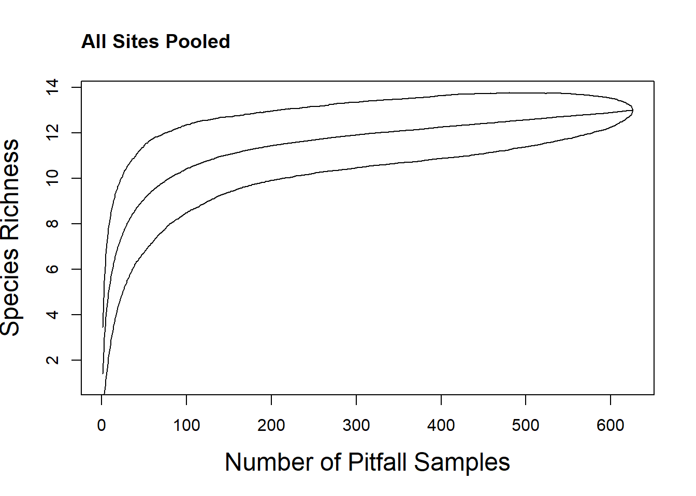
av <- filter(sitespec, Site == "Aven") %>% select(-Site)
# xi <- specaccum(av, method = "rarefaction", permutations = 100)
xs <- specaccum(av, method = "random", permutations = 1000)
# plot(xi, xlab = "Number of Individuals", ylab = "Species Richness")
plot(xs, xlab = "Number of Pitfall Samples", ylab = "Species Richness", cex.lab = 1.5)
title("Avenal", adj = 0)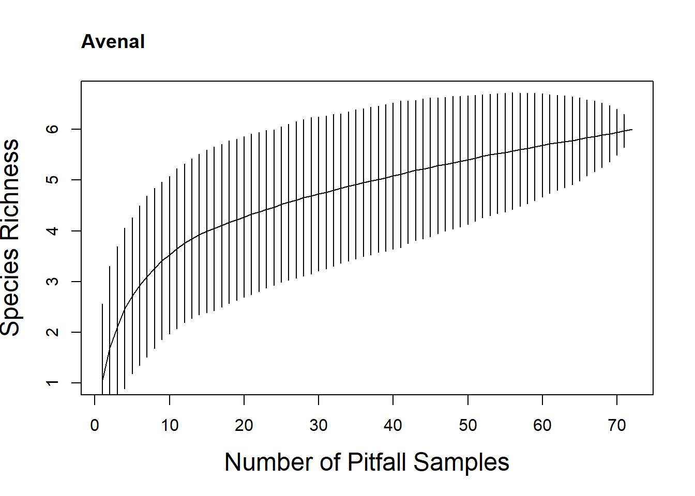
cas <- filter(sitespec, Site == "CaS") %>% select(-Site)
# xi <- specaccum(cas, method = "rarefaction", permutations = 100)
xs <- specaccum(cas, method = "random", permutations = 1000)
# plot(xi, xlab = "Number of Individuals", ylab = "Species Richness")
plot(xs, xlab = "Number of Pitfall Samples", ylab = "Species Richness", cex.lab = 1.5)
title("Carrizo - Shrubs", adj = 0)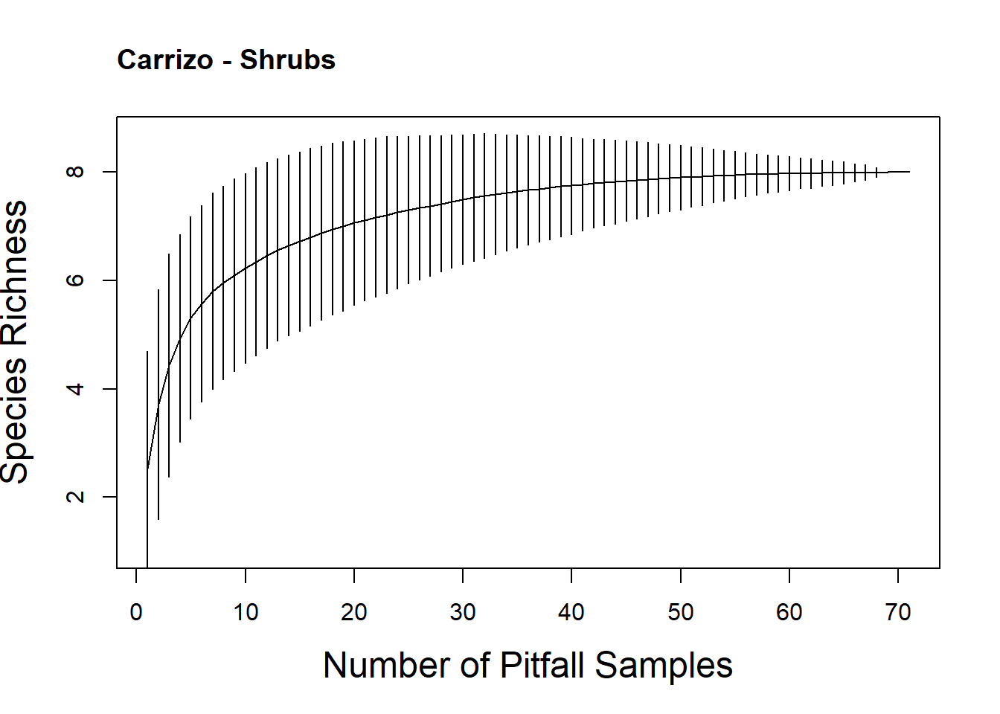
casl <- filter(sitespec, Site == "CaSl") %>% select(-Site)
# xi <- specaccum(casl, method = "rarefaction", permutations = 100)
xs <- specaccum(casl, method = "random", permutations = 1000)
# plot(xi, xlab = "Number of Individuals", ylab = "Species Richness")
plot(xs, xlab = "Number of Pitfall Samples", ylab = "Species Richness", cex.lab = 1.5)
title("Carrizo - Shrubless", adj = 0)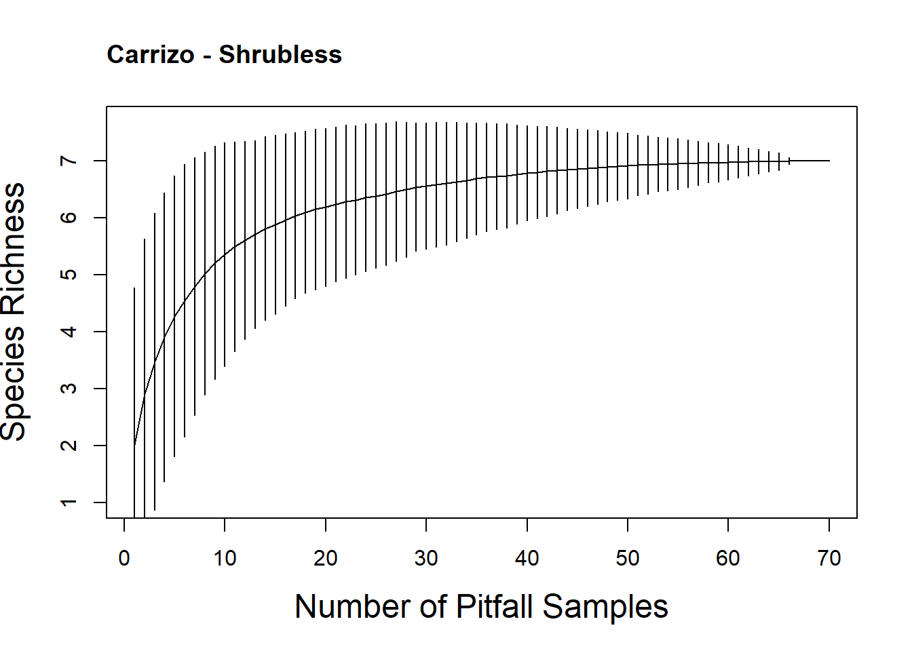
coal <- filter(sitespec, Site == "Coal") %>% select(-Site)
# xi <- specaccum(coal, method = "rarefaction", permutations = 100)
xs <- specaccum(coal, method = "random", permutations = 1000)
# plot(xi, xlab = "Number of Individuals", ylab = "Species Richness")
plot(xs, xlab = "Number of Pitfall Samples", ylab = "Species Richness", cex.lab = 1.5)
title("Coalinga", adj = 0)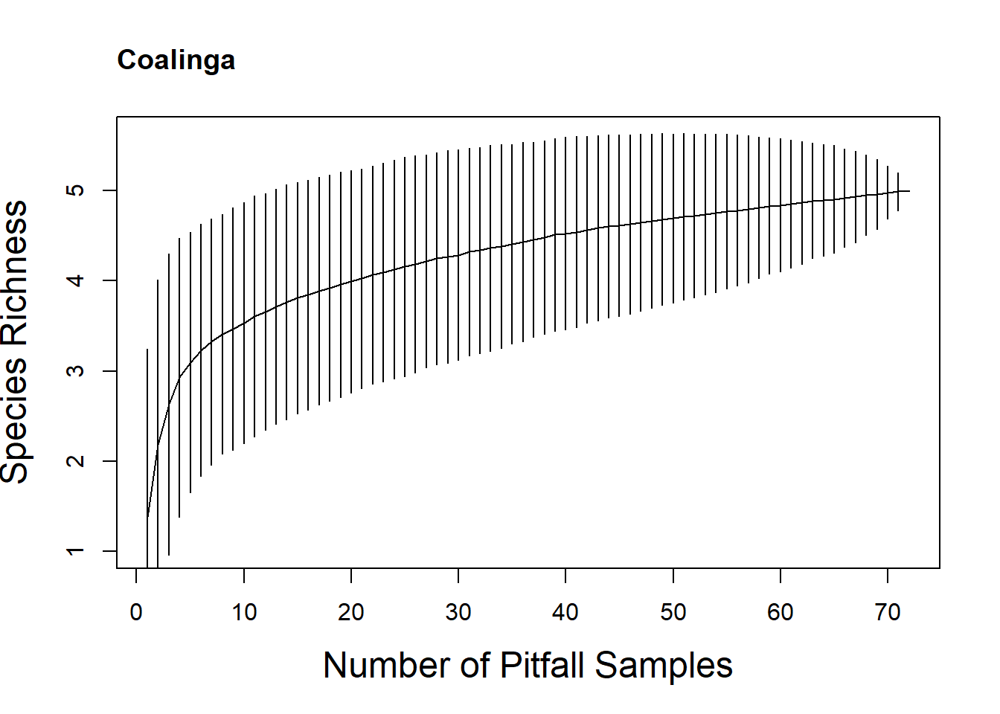
lok <- filter(sitespec, Site == "Lok") %>% select(-Site)
# xi <- specaccum(lok, method = "rarefaction", permutations = 100)
xs <- specaccum(lok, method = "random", permutations = 1000)
# plot(xi, xlab = "Number of Individuals", ylab = "Species Richness")
plot(xs, xlab = "Number of Pitfall Samples", ylab = "Species Richness", cex.lab = 1.5)
title("Lokern", adj = 0)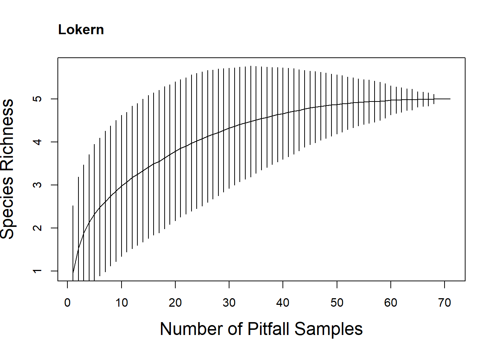
mov <- filter(sitespec, Site == "Mov") %>% select(-Site)
# xi <- specaccum(mov, method = "rarefaction", permutations = 100)
xs <- specaccum(mov, method = "random", permutations = 1000)
# plot(xi, xlab = "Number of Individuals", ylab = "Species Richness")
plot(xs, xlab = "Number of Pitfall Samples", ylab = "Species Richness", cex.lab = 1.5)
title("Mountainview Rd", adj = 0)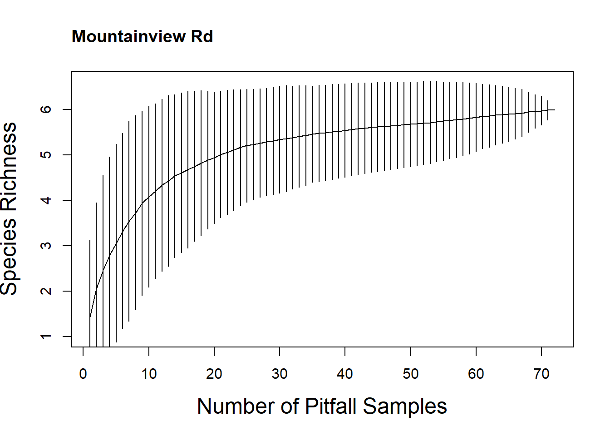
papl <- filter(sitespec, Site == "PaPl") %>% select(-Site)
# xi <- specaccum(papl, method = "rarefaction", permutations = 100)
xs <- specaccum(papl, method = "random", permutations = 1000)
# plot(xi, xlab = "Number of Individuals", ylab = "Species Richness")
plot(xs, xlab = "Number of Pitfall Samples", ylab = "Species Richness", cex.lab = 1.5)
title("Panoche Hills", adj = 0)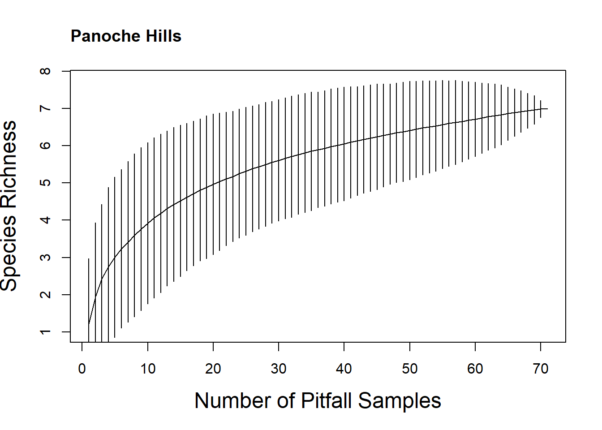
semit <- filter(sitespec, Site == "SemiT") %>% select(-Site)
# xi <- specaccum(semit, method = "rarefaction", permutations = 100)
xs <- specaccum(semit, method = "random", permutations = 1000)
# plot(xi, xlab = "Number of Individuals", ylab = "Species Richness")
plot(xs, xlab = "Number of Pitfall Samples", ylab = "Species Richness", cex.lab = 1.5)
title("Semitropic", adj = 0)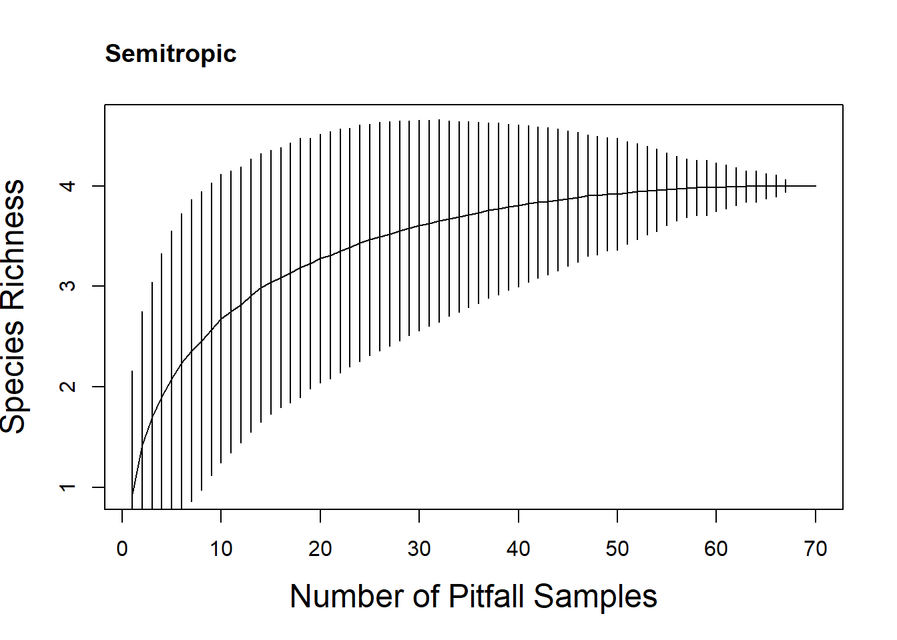
sicr <- filter(sitespec, Site == "SiCr") %>% select(-Site)
# xi <- specaccum(sicr, method = "rarefaction", permutations = 100)
xs <- specaccum(sicr, method = "random", permutations = 1000)
# plot(xi, xlab = "Number of Individuals", ylab = "Species Richness")
plot(xs, xlab = "Number of Pitfall Samples", ylab = "Species Richness", cex.lab = 1.5)
title("Silver Creek Ranch", adj = 0)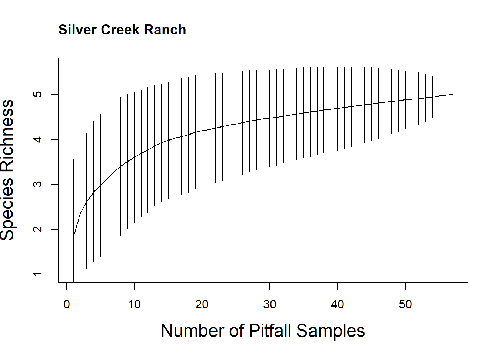
Taxonomic beta diversity
#functional indices are weighted so use abundance weighted beta-diversity
library(betapart)
# baselgi methods for beta-diversity
#we can use the occupancy population dateframe
#drop half of species name after space
#filter out two singletons
sites_species <- site.pop
sites_species <- separate(sites_species, spepop, into = c("species", "month"), sep = " ")
sites_species <- filter(sites_species, species != "Solenopsisaurea" & species != "Solenopsismolesta")
sites_species <- select(sites_species, -month)
# need wide
sites_species <- pivot_wider(sites_species, names_from = "species", values_from = "pit.abun") %>% as.data.frame()
row.names(sites_species) <- sites_species$site.name
sites_species <- select(sites_species, -site.name)
#balanced variation in abundance is turnover
#abundance gradients are nestedness
beta.core <- betapart.core.abund(sites_species)
betapair <- beta.pair.abund(beta.core)
betamulti <- beta.multi.abund(beta.core)
#turnover component
betamulti$beta.BRAY.BAL[1] 0.7726223#nestedness component
betamulti$beta.BRAY.GRA[1] 0.1070712#combined
betamulti$beta.BRAY[1] 0.8796935#mostly turnover, some nestedness
#betapair are dist objects
tdis <- betapair$beta.bray.bal
ndis <- betapair$beta.bray.gra
bdis <- betapair$beta.bray
#let's use the standardized environmental variables from the pca scores
envbeta <- cbind(env.reduce, env2_sitelabels)
#sort envbeta to same order as site_species
envbeta <- envbeta[order(match(envbeta[,10], row.names(sites_species))),]
row.names(envbeta) <- envbeta$env2_sitelabels
envbeta <- select(envbeta, -env2_sitelabels)
env_dist <- dist(envbeta, "euclidean")
mantel(tdis, env_dist)
Mantel statistic based on Pearson's product-moment correlation
Call:
mantel(xdis = tdis, ydis = env_dist)
Mantel statistic r: 0.08226
Significance: 0.135
Upper quantiles of permutations (null model):
90% 95% 97.5% 99%
0.0938 0.1259 0.1513 0.1808
Permutation: free
Number of permutations: 999mantel(ndis, env_dist)
Mantel statistic based on Pearson's product-moment correlation
Call:
mantel(xdis = ndis, ydis = env_dist)
Mantel statistic r: 0.1643
Significance: 0.027
Upper quantiles of permutations (null model):
90% 95% 97.5% 99%
0.105 0.136 0.166 0.196
Permutation: free
Number of permutations: 999mantel(bdis, env_dist)
Mantel statistic based on Pearson's product-moment correlation
Call:
mantel(xdis = bdis, ydis = env_dist)
Mantel statistic r: 0.262
Significance: 0.002
Upper quantiles of permutations (null model):
90% 95% 97.5% 99%
0.0891 0.1161 0.1416 0.1812
Permutation: free
Number of permutations: 999mean(bdis)[1] 0.4784729sd(bdis)[1] 0.1532665#turnover NOT related to env gradient
#nestedness - this is changes to abundance is relatedPhylogenetic signal
#install.packages("phytools")
#install.packages("picante")
library(picante)
library(phytools)Warning: package 'phytools' was built under R version 4.3.2Loading required package: maps
Attaching package: 'phytools'The following object is masked from 'package:vegan':
scoreslibrary(tidyr)
genusv <- c("Cyphomyrmex", "Dorymyrmex", "Forelius", "Messor", "Myrmecocystus", "Pheidole", "Pogonomyrmex", "Solenopsis", "Temnothorax")
#import nexus tree
tree <- read.nexus("moreau/moreaubeast.nex")
str(tree)List of 4
$ edge : int [1:550, 1:2] 277 278 279 280 281 282 283 284 285 286 ...
$ edge.length: num [1:550] 31.17 8.86 16.31 12.32 13.82 ...
$ Nnode : int 275
$ tip.label : chr [1:276] "Eutetramorium_sp._CSM" "Proatta_butteli_CSM" "Lophomyrmex_striatulus_CSM" "Mayriella_transfuga_CSM" ...
- attr(*, "class")= chr "phylo"
- attr(*, "order")= chr "cladewise"plot(tree)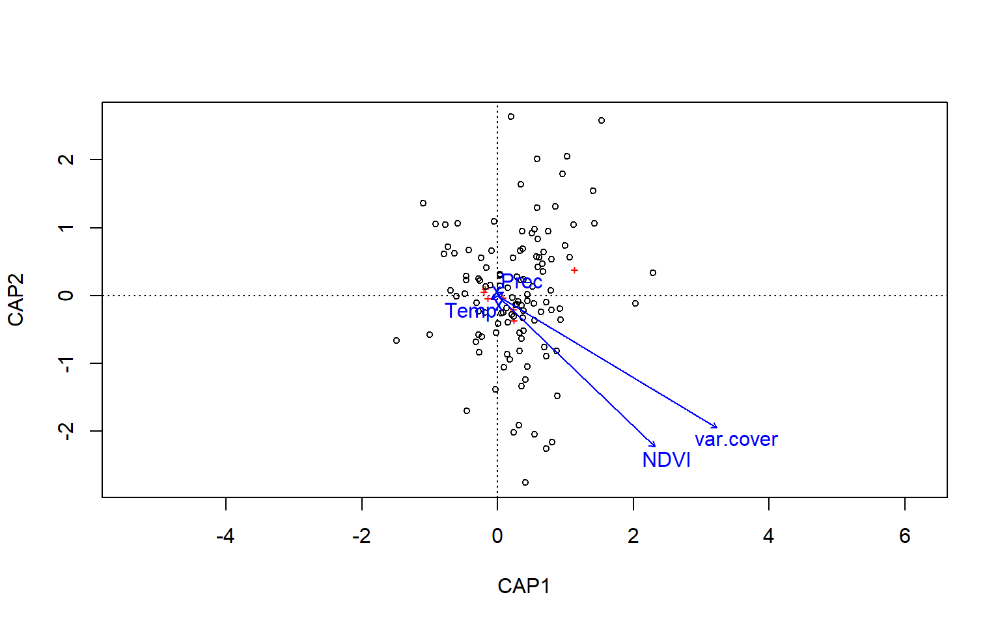
tree
Phylogenetic tree with 276 tips and 275 internal nodes.
Tip labels:
Eutetramorium_sp._CSM, Proatta_butteli_CSM, Lophomyrmex_striatulus_CSM, Mayriella_transfuga_CSM, Mayriella_ebbei, Dilobocondyla_sp._CSM, ...
Rooted; includes branch lengths.labels <- tree[["tip.label"]]
labels <- as.data.frame(labels)
full <- labels$labels
labels <- separate_wider_delim(labels, cols = 1, delim ="_", names = c("genus", "sp", "csm"), too_few = "align_start", too_many = "merge")
labels <- cbind(full, labels)
labels <- subset(labels, genus %in% genusv)
keep <- labels$full
df <- data.frame(matrix(ncol = 19, nrow = 1))
colnames(df) <- keep
df[is.na(df)] <- 1
df <- dplyr::select(df, 1, 4, 6, 8, 11, 12, 13, 16, 17, 18, 19)
pruned <- prune.sample(df, tree)
pruned
Phylogenetic tree with 11 tips and 10 internal nodes.
Tip labels:
Temnothorax_tricarinatus_CSM, Pheidole_hyatti, Cyphomyrmex_sp._CSM, Solenopsis_xyloni, Messor_julianus_CSM, Messor_andrei, ...
Rooted; includes branch lengths.pruned[["tip.label"]] <- c("Temnothoraxandrei", "Pheidolehyatti", "Cyphomyrmexwheeleri", "Solenopsisxyloni", "Messorandrei", "Messorpergandei", "Pogonomyrmexcalifornicus", "Myrmecocystus", "Dorymyrmexbicolor", "Dorymyrmexinsanus", "Foreliuspruinosis")
plot(pruned)
labelorder <- c("Temnothoraxandrei", "Pheidolehyatti", "Cyphomyrmexwheeleri", "Solenopsisxyloni", "Messorandrei", "Messorpergandei", "Pogonomyrmexcalifornicus", "Myrmecocystus", "Dorymyrmexbicolor", "Dorymyrmexinsanus", "Foreliuspruinosis")
plot(pruned)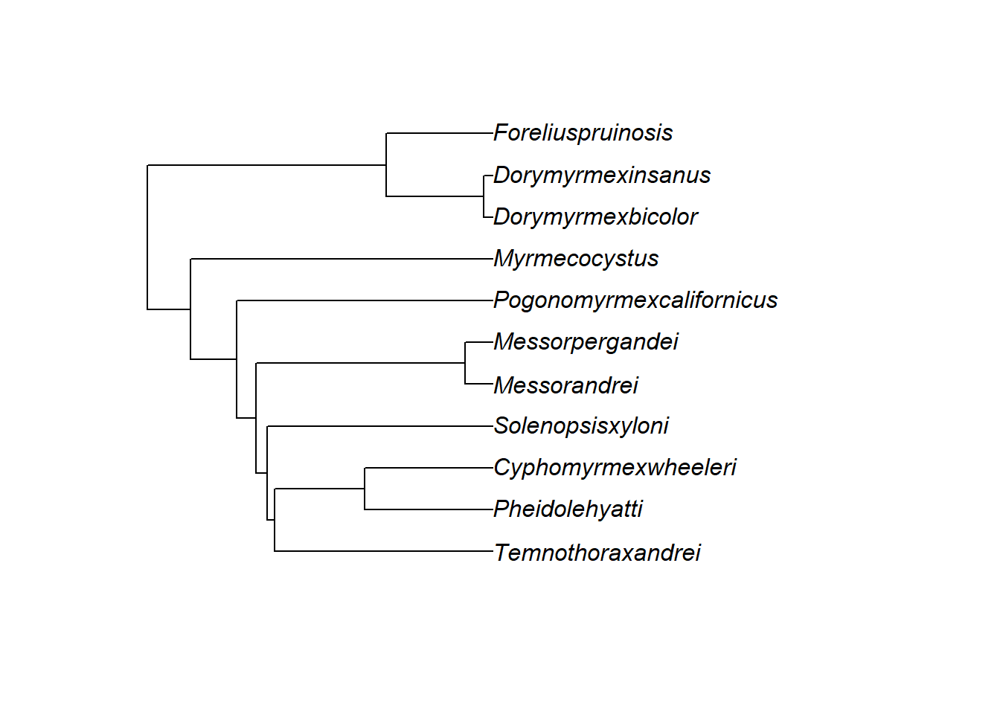
#
#get species level trait values
traits.sp1 <- traits.sp %>%
select(.,-sd) %>%
pivot_wider(names_from = Trait, values_from = mean) %>%
as.data.frame(traits.sp)
traits.sp1 <- select(traits.sp1, 1, 3, 5, 8, 9, 11, 13, 14)
traits.sp1$X.1 <- gsub(" ", ".", traits.sp1$X.1)
traitphy <- traits.sp1
row.names(traitphy) <- traitphy$X.1
traitphy <- select(traitphy, -X.1)
names <- sort(c("Temnothoraxandrei", "Pheidolehyatti", "Cyphomyrmexwheeleri", "Solenopsisxyloni", "Messorandrei", "Messorpergandei", "Pogonomyrmexcalifornicus", "Myrmecocystus", "Dorymyrmexbicolor", "Dorymyrmexinsanus", "Foreliuspruinosis") )
row.names(traitphy) <- names
traitphy <- traitphy[match(labelorder, row.names(traitphy)),]
row.names(traitphy) [1] "Temnothoraxandrei" "Pheidolehyatti"
[3] "Cyphomyrmexwheeleri" "Solenopsisxyloni"
[5] "Messorandrei" "Messorpergandei"
[7] "Pogonomyrmexcalifornicus" "Myrmecocystus"
[9] "Dorymyrmexbicolor" "Dorymyrmexinsanus"
[11] "Foreliuspruinosis" pruned[["tip.label"]] [1] "Temnothoraxandrei" "Pheidolehyatti"
[3] "Cyphomyrmexwheeleri" "Solenopsisxyloni"
[5] "Messorandrei" "Messorpergandei"
[7] "Pogonomyrmexcalifornicus" "Myrmecocystus"
[9] "Dorymyrmexbicolor" "Dorymyrmexinsanus"
[11] "Foreliuspruinosis" par(mfrow=c(2,2))
for (i in names(traitphy)) {
plot(pruned, show.tip.label=FALSE, main=i)
tiplabels(pch=22, col=traitphy[,i]+1, bg=traitphy[,i]+1, cex=1.5)
}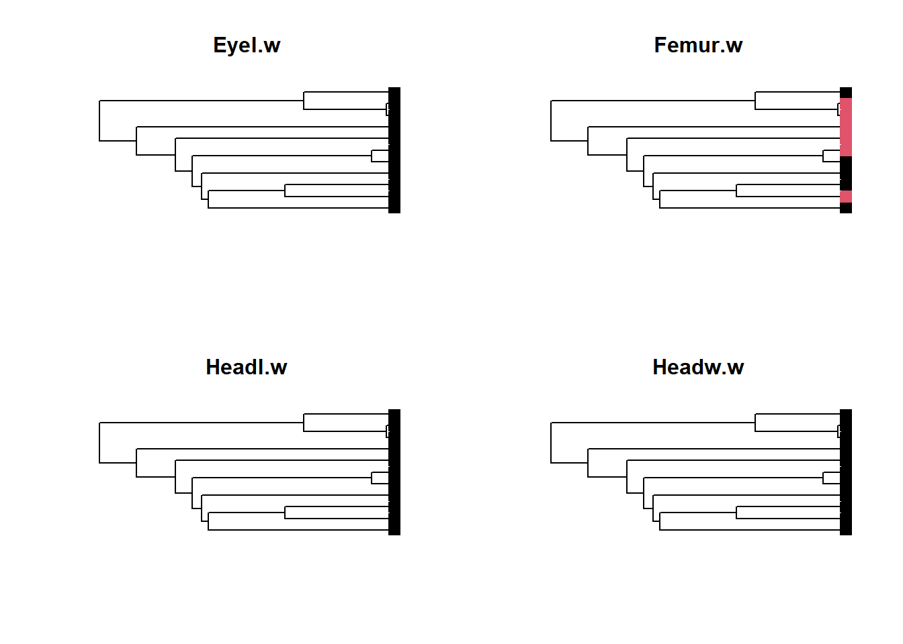
multiPhylosignal(traitphy, pruned) K PIC.variance.obs PIC.variance.rnd.mean PIC.variance.P
Eyel.w 0.2532986 3.742133e-05 4.606514e-05 0.524
Femur.w 0.5584242 3.399395e-04 9.856399e-04 0.137
Headl.w 0.5113930 1.282826e-04 3.328148e-04 0.134
Headw.w 0.8046833 1.277059e-04 5.185482e-04 0.040
Mandible.w 0.5146835 6.169524e-05 1.599992e-04 0.141
Scape.w 0.5003158 3.265117e-04 8.347862e-04 0.175
Webers 0.5805852 5.486835e-03 1.603504e-02 0.153
PIC.variance.Z
Eyel.w -0.2633894
Femur.w -0.8945010
Headl.w -0.8562493
Headw.w -0.8868699
Mandible.w -0.8098949
Scape.w -0.7703697
Webers -0.9193143ps <- multiPhylosignal(traitphy, pruned)
write.csv(ps, "Clean Data/phylo.csv")
ps K PIC.variance.obs PIC.variance.rnd.mean PIC.variance.P
Eyel.w 0.2532986 3.742133e-05 4.709071e-05 0.498
Femur.w 0.5584242 3.399395e-04 9.954752e-04 0.143
Headl.w 0.5113930 1.282826e-04 3.316720e-04 0.145
Headw.w 0.8046833 1.277059e-04 5.450904e-04 0.027
Mandible.w 0.5146835 6.169524e-05 1.590812e-04 0.166
Scape.w 0.5003158 3.265117e-04 8.159558e-04 0.204
Webers 0.5805852 5.486835e-03 1.623946e-02 0.149
PIC.variance.Z
Eyel.w -0.2876508
Femur.w -0.8963552
Headl.w -0.8694340
Headw.w -0.9438506
Mandible.w -0.8030385
Scape.w -0.7370164
Webers -0.9200552library(adephylo)
library(phylosignal)Warning: package 'phylosignal' was built under R version 4.3.2
Attaching package: 'phylosignal'The following object is masked from 'package:lattice':
dotplotlibrary(phylobase)
Attaching package: 'phylobase'The following object is masked from 'package:phytools':
readNexusThe following object is masked from 'package:ape':
edgesp4d <- phylo4d(pruned, traitphy)
barplot.phylo4d(p4d, tree.type = "phylo", tree.ladderize = TRUE)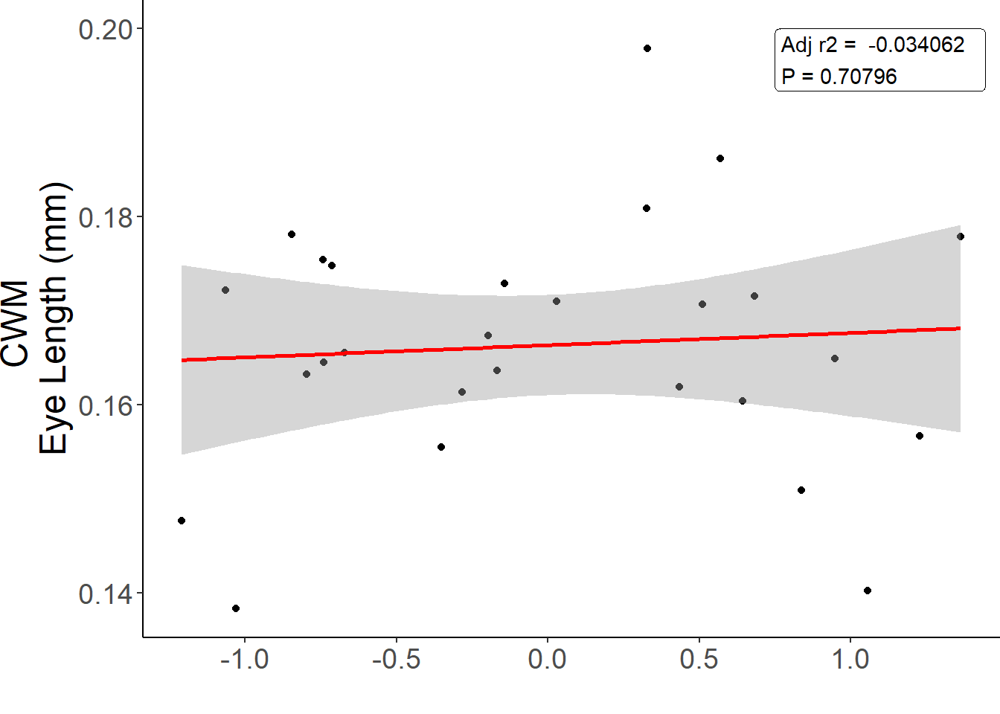
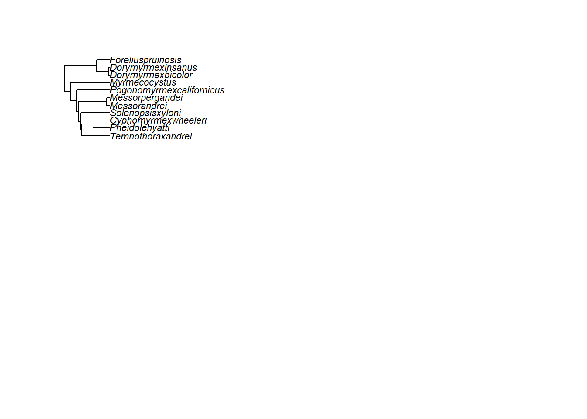
phyloSignal(p4d = p4d, method = "all")$stat
Cmean I K K.star Lambda
Eyel.w 0.02557409 0.08942027 0.2532986 0.2596278 9.740407e-02
Femur.w -0.09055732 -0.06563768 0.5584242 0.5717154 6.790197e-05
Headl.w -0.19542566 -0.13060100 0.5113930 0.5241054 6.790197e-05
Headw.w -0.02133032 -0.06810060 0.8046833 0.8248318 1.026769e+00
Mandible.w -0.19836630 -0.14149397 0.5146835 0.5263125 6.790197e-05
Scape.w -0.19528600 -0.03013315 0.5003158 0.5123065 6.790197e-05
Webers 0.29106194 0.11197731 0.5805852 0.5949963 7.199164e-01
$pvalue
Cmean I K K.star Lambda
Eyel.w 0.229 0.106 0.492 0.496 0.78447533
Femur.w 0.408 0.399 0.144 0.136 1.00000000
Headl.w 0.661 0.580 0.127 0.149 1.00000000
Headw.w 0.311 0.359 0.045 0.036 0.02868054
Mandible.w 0.707 0.640 0.147 0.160 1.00000000
Scape.w 0.673 0.286 0.197 0.190 1.00000000
Webers 0.032 0.097 0.150 0.155 0.31989075is.ultrametric(pruned)[1] TRUEsespd <- ses.pd(sites_species, pruned, null.model = "independentswap")
pdist <- cophenetic.phylo(pruned)
ses.mpd.result <- ses.mpd(sites_species, pdist, null.model="independentswap", abundance.weighted=TRUE, runs=99)
ses.mpd.result$sites <- row.names(ses.mpd.result)
test <- left_join(SES2, ses.mpd.result, by = "sites")
m1 <- glmmTMB(SES3 ~ mpd.obs.z + PC1 + PC2 +(1|Site), data = test)
summary(m1) Family: gaussian ( identity )
Formula: SES3 ~ mpd.obs.z + PC1 + PC2 + (1 | Site)
Data: test
AIC BIC logLik deviance df.resid
67.9 75.6 -27.9 55.9 21
Random effects:
Conditional model:
Groups Name Variance Std.Dev.
Site (Intercept) 4.005e-09 6.328e-05
Residual 4.635e-01 6.808e-01
Number of obs: 27, groups: Site, 9
Dispersion estimate for gaussian family (sigma^2): 0.463
Conditional model:
Estimate Std. Error z value Pr(>|z|)
(Intercept) 0.5996 0.1312 4.569 4.91e-06 ***
mpd.obs.z 0.2330 0.1050 2.220 0.02644 *
PC1 -0.5276 0.1743 -3.027 0.00247 **
PC2 -0.2179 0.1751 -1.245 0.21322
---
Signif. codes: 0 '***' 0.001 '**' 0.01 '*' 0.05 '.' 0.1 ' ' 1performance(m1)Random effect variances not available. Returned R2 does not account for random effects.# Indices of model performance
AIC | AICc | BIC | R2 (cond.) | R2 (marg.) | RMSE | Sigma
------------------------------------------------------------------
67.858 | 72.058 | 75.633 | | 0.357 | 0.681 | 0.681m1 <- glmmTMB(mpd.obs.z ~ SES3 + PC1 + PC2 + (1|Site), data = test)
summary(m1) Family: gaussian ( identity )
Formula: mpd.obs.z ~ SES3 + PC1 + PC2 + (1 | Site)
Data: test
AIC BIC logLik deviance df.resid
94.3 102.1 -41.2 82.3 21
Random effects:
Conditional model:
Groups Name Variance Std.Dev.
Site (Intercept) 0.6875 0.8291
Residual 0.8094 0.8997
Number of obs: 27, groups: Site, 9
Dispersion estimate for gaussian family (sigma^2): 0.809
Conditional model:
Estimate Std. Error z value Pr(>|z|)
(Intercept) -0.5062 0.3620 -1.398 0.16200
SES3 0.7447 0.2696 2.762 0.00575 **
PC1 0.3084 0.4459 0.692 0.48922
PC2 -0.2232 0.5040 -0.443 0.65787
---
Signif. codes: 0 '***' 0.001 '**' 0.01 '*' 0.05 '.' 0.1 ' ' 1performance(m1)# Indices of model performance
AIC | AICc | BIC | R2 (cond.) | R2 (marg.) | ICC | RMSE | Sigma
---------------------------------------------------------------------------
94.312 | 98.512 | 102.087 | 0.572 | 0.208 | 0.459 | 0.785 | 0.900cor.test(test$mpd.obs.z, test$PC1)
Pearson's product-moment correlation
data: test$mpd.obs.z and test$PC1
t = 0.26919, df = 25, p-value = 0.79
alternative hypothesis: true correlation is not equal to 0
95 percent confidence interval:
-0.3330587 0.4250891
sample estimates:
cor
0.05375942 t.test(test$mpd.obs.z)
One Sample t-test
data: test$mpd.obs.z
t = -0.29309, df = 26, p-value = 0.7718
alternative hypothesis: true mean is not equal to 0
95 percent confidence interval:
-0.5790630 0.4345396
sample estimates:
mean of x
-0.07226169 ggplot(test, aes(SES3, mpd.obs.z)) + geom_smooth(method = "lm")`geom_smooth()` using formula = 'y ~ x'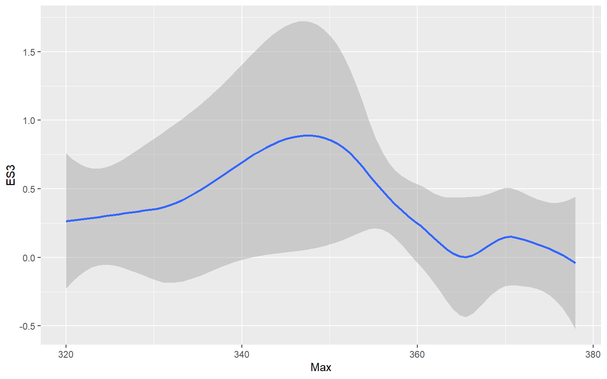
ggplot(test, aes(PC1, mpd.obs.z)) + geom_smooth(method = "lm")`geom_smooth()` using formula = 'y ~ x'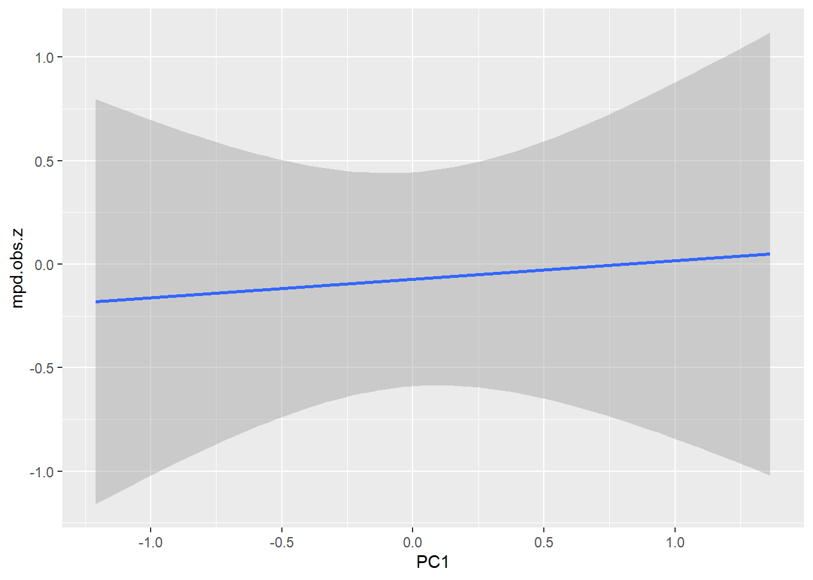
ggplot(test, aes(PC1, SES3)) + geom_smooth(method = "lm")`geom_smooth()` using formula = 'y ~ x'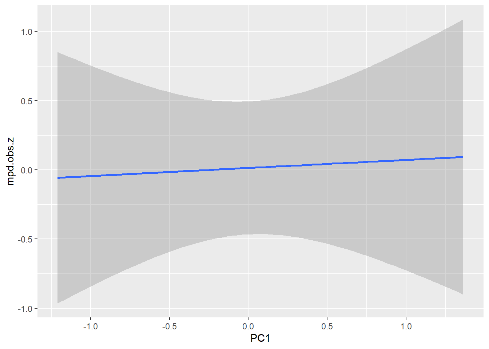
Test.Kmult<-function(x,phy,iter=999){
library(ape)
Kmult<-function(x,phy){
x<-as.matrix(x)
N<-length(phy$tip.label)
ones<-array(1,N)
C<-vcv.phylo(phy)
C<-C[row.names(x),row.names(x)]
a.obs<-colSums(solve(C))%*%x/sum(solve(C))
#evol.vcv code
distmat<-as.matrix(dist(rbind(as.matrix(x),a.obs)))
MSEobs.d <- sum(distmat[(1:N),(N+1)]^2)
#sum distances root vs. tips
eigC <- eigen(C)
D.mat<-solve(eigC$vectors
%*% diag(sqrt(eigC$values))
%*% t(eigC$vectors))
dist.adj<-as.matrix(dist(rbind((D.mat
%*%(x-(ones%*%a.obs))),0)))
MSE.d<-sum(dist.adj[(1:N),(N+1)]^2)
#sum distances for transformed data)
K.denom<-(sum(diag(C))-
N*solve(t(ones)%*%solve(C)%*%ones)) / (N-1)
K.stat<-(MSEobs.d/MSE.d)/K.denom
return(K.stat)
}
K.obs<-Kmult(x,phy)
P.val <- 1
K.val <- rep(0, iter)
for (i in 1:iter){
x.r<-as.matrix(x[sample(nrow(x)),])
rownames(x.r)<-rownames(x)
K.rand<-Kmult(x.r,phy)
P.val<-ifelse(K.rand>=K.obs, P.val+1,P.val)
K.val[i] <- K.rand
}
P.val <- P.val/(iter + 1)
K.val[iter + 1] = K.obs
hist(K.val, 30, freq = TRUE, col = "gray",
xlab = "Phylogenetic Signal")
arrows(K.obs, 50, K.obs, 5, length = 0.1, lwd = 2)
return(list(phy.signal = K.obs, pvalue = P.val))
}
traitphystand <- decostand(traitphy, method = "standardize")
Test.Kmult(traitphystand, pruned)
$phy.signal
[,1]
[1,] 0.4794483
$pvalue
[,1]
[1,] 0.008Phylo and functional plots together
test2 <- pivot_longer(test, cols = c("SES3", "mpd.obs.z"), names_to = "type", values_to = "value")
test2$type <- factor(test2$type, levels = c("SES3", "mpd.obs.z"))
a <- ggplot(test2, aes(PC1, value, color = type)) + geom_point(aes(color = type)) + stat_smooth(data = filter(test2, type == "SES3"), method = "lm") + stat_smooth(data = filter(test2, type == "mpd.obs.z"), method = "lm", linetype = "dashed", se = FALSE) + xlab("PC1") + theme(panel.grid.major = element_blank(), panel.grid.minor = element_blank(),
panel.background = element_rect(colour = "black", size=1, fill = NA), axis.line = element_line(colour = "black")) + ylab("Standardized Effect Size Dispersion") + geom_hline(yintercept = 0, linetype = "dashed") + scale_color_manual(values = c( "#DF7861", "#94B49F"), labels = c("Functional", "Phylogenetic")) + theme(legend.position= c(0.8, 0.9)) + theme(legend.title=element_blank()) + theme(text = element_text(size = 13))
a`geom_smooth()` using formula = 'y ~ x'
`geom_smooth()` using formula = 'y ~ x'
b <- ggplot(test, aes(mpd.obs.z, SES3)) + stat_smooth(method = "lm", color = "black") + geom_point() + theme(panel.grid.major = element_blank(), panel.grid.minor = element_blank(),
panel.background = element_rect(colour = "black", size=1, fill = NA), axis.line = element_line(colour = "black")) + xlab("Phylogenetic Dispersion (SES MPD)") + ylab("Functional Dispersion (SES FDisp)") + theme(text = element_text(size = 13))
plots <- list(a,b)
grobs <- list()
widths <- list()
for (i in 1:length(plots)){
grobs[[i]] <- ggplotGrob(plots[[i]])
widths[[i]] <- grobs[[i]]$widths[2:5]
}`geom_smooth()` using formula = 'y ~ x'
`geom_smooth()` using formula = 'y ~ x'
`geom_smooth()` using formula = 'y ~ x'maxwidth <- do.call(grid::unit.pmax, widths)
for (i in 1:length(grobs)){
grobs[[i]]$widths[2:5] <- as.list(maxwidth)
}
p <- do.call("grid.arrange", c(grobs, ncol = 2))
pTableGrob (1 x 2) "arrange": 2 grobs
z cells name grob
1 1 (1-1,1-1) arrange gtable[layout]
2 2 (1-1,2-2) arrange gtable[layout]geom_label(aes(x = 0.75, y = 2),vjust=1, hjust = 0,
label = paste("Adj r2 = ",signif(summary(fit1)$adj.r.squared, 3),
" \nP =",signif(summary(fit1)$coef[2,4], 3)))mapping: x = 0.75, y = 2
geom_label: parse = FALSE, label.padding = 0.25, label.r = 0.15, label.size = 0.25, na.rm = FALSE
stat_identity: na.rm = FALSE
position_identity Variance partitioning
library(adespatial)The legacy packages maptools, rgdal, and rgeos, underpinning the sp package,
which was just loaded, will retire in October 2023.
Please refer to R-spatial evolution reports for details, especially
https://r-spatial.org/r/2023/05/15/evolution4.html.
It may be desirable to make the sf package available;
package maintainers should consider adding sf to Suggests:.
The sp package is now running under evolution status 2
(status 2 uses the sf package in place of rgdal)Registered S3 methods overwritten by 'adegraphics':
method from
biplot.dudi ade4
kplot.foucart ade4
kplot.mcoa ade4
kplot.mfa ade4
kplot.pta ade4
kplot.sepan ade4
kplot.statis ade4
scatter.coa ade4
scatter.dudi ade4
scatter.nipals ade4
scatter.pco ade4
score.acm ade4
score.mix ade4
score.pca ade4
screeplot.dudi ade4Registered S3 method overwritten by 'spdep':
method from
plot.mst ape Registered S3 methods overwritten by 'adespatial':
method from
plot.multispati adegraphics
print.multispati ade4
summary.multispati ade4
Attaching package: 'adespatial'The following object is masked from 'package:ade4':
multispatilibrary(SoDA)
#convert our degrees in lat long to cartesian
sites.xy <- geoXY(SES2$Lat.x, SES2$Long.x)
mem <- dbmem(sites.xy)
disp <- SES2$SES3
env <- select(SES2, 4, 5, 8, 12:14, 18, 19, 24)
env <- decostand(env, method = "standardize")
pses <- test$mpd.obs.z
v1 <- varpart(Y =disp, X = env, mem, pses)
summary(v1)
Unique fractions and total with shared fractions equally allocated:
Unique Contributed Component
X1 0.265 0.386 env
X2 0.216 0.267 mem
X3 0.325 0.190 pses
Contributions of fractions to sets:
X1 X2 X3
[a] 0.265150
[b] 0.215583
[c] 0.325427
[d] 0.153661 0.153661
[e] -0.103081 -0.103081
[f] -0.033342 -0.033342
[g] 0.000576 0.000576 0.000576plot(v1, Xnames = NA)
text(0.1, 1, labels = "Environment")
v1
Partition of variance in RDA
Call: varpart(Y = disp, X = env, mem, pses)
Explanatory tables:
X1: env
X2: mem
X3: pses
No. of explanatory tables: 3
Total variation (SS): 19.198
Variance: 0.73839
No. of observations: 27
Partition table:
Df R.square Adj.R.square Testable
[a+d+f+g] = X1 9 0.67799 0.50752 TRUE
[b+d+e+g] = X2 3 0.39711 0.31847 TRUE
[c+e+f+g] = X3 1 0.09068 0.05431 TRUE
[a+b+d+e+f+g] = X1+X2 12 0.73989 0.51694 TRUE
[a+c+d+e+f+g] = X1+X3 10 0.77033 0.62678 TRUE
[b+c+d+e+f+g] = X2+X3 4 0.64226 0.57722 TRUE
[a+b+c+d+e+f+g] = All 13 0.92118 0.84237 TRUE
Individual fractions
[a] = X1 | X2+X3 9 0.26515 TRUE
[b] = X2 | X1+X3 3 0.21558 TRUE
[c] = X3 | X1+X2 1 0.32543 TRUE
[d] 0 0.30732 FALSE
[e] 0 -0.20616 FALSE
[f] 0 -0.06668 FALSE
[g] 0 0.00173 FALSE
[h] = Residuals 0.15763 FALSE
Controlling 1 table X
[a+d] = X1 | X3 9 0.57247 TRUE
[a+f] = X1 | X2 9 0.19847 TRUE
[b+d] = X2 | X3 3 0.52291 TRUE
[b+e] = X2 | X1 3 0.00942 TRUE
[c+e] = X3 | X1 1 0.11927 TRUE
[c+f] = X3 | X2 1 0.25874 TRUE
---
Use function 'rda' to test significance of fractions of interestfract <- v1$part$fract
ind <- v1$part$indfract#CWM-environment ## CWM ~ PC1
site_cwm <- dbFD(trait.pop, wide.pop, w.abun = TRUE)$CWMFEVe: Could not be calculated for communities with <3 functionally singular species.
FRic: To respect s > t, FRic could not be calculated for communities with <3 functionally singular species.
FRic: Dimensionality reduction was required. The last 5 PCoA axes (out of 7 in total) were removed.
FRic: Quality of the reduced-space representation = 0.6807776
FDiv: Could not be calculated for communities with <3 functionally singular species. cwm <- site_cwm
cwm$sites <- row.names(cwm)
cwm <- select(SES2, Site, sites, PC1, PC2) %>% left_join(cwm, by = 'sites')fit2 <- glmmTMB(Webers ~ PC1 + (1|Site), cwm)
summary(fit2) Family: gaussian ( identity )
Formula: Webers ~ PC1 + (1 | Site)
Data: cwm
AIC BIC logLik deviance df.resid
-30.1 -24.9 19.0 -38.1 23
Random effects:
Conditional model:
Groups Name Variance Std.Dev.
Site (Intercept) 0.0005269 0.02295
Residual 0.0137959 0.11746
Number of obs: 27, groups: Site, 9
Dispersion estimate for gaussian family (sigma^2): 0.0138
Conditional model:
Estimate Std. Error z value Pr(>|z|)
(Intercept) 0.97834 0.02386 41.00 < 2e-16 ***
PC1 -0.10159 0.03189 -3.19 0.00144 **
---
Signif. codes: 0 '***' 0.001 '**' 0.01 '*' 0.05 '.' 0.1 ' ' 1model_performance(fit2)# Indices of model performance
AIC | AICc | BIC | R2 (cond.) | R2 (marg.) | ICC | RMSE | Sigma
-----------------------------------------------------------------------------
-30.052 | -28.234 | -24.869 | 0.324 | 0.298 | 0.037 | 0.115 | 0.117t <- model_performance(fit2)
a <- ggplot(fit2$frame, aes_string(x = names(fit2$frame)[2], y = names(fit2$frame)[1])) +
geom_point() +
stat_smooth(method = "lm", col = "blue") + geom_label(aes(x = 0.75, y = 1.4),vjust=1, hjust = 0,
label = paste("Marginal \nr2 = ",signif(t$R2_marginal, 2)), size = 5) + ylab("CWM Weber's \nBody Length (mm)") + xlab("PC1") + theme(panel.grid.major = element_blank(), panel.grid.minor = element_blank(),
panel.background = element_blank(), axis.line = element_line(colour = "black")) + theme(plot.margin=grid::unit(c(0,0,0,0), "mm")) + theme(text = element_text(size = 19))Warning: `aes_string()` was deprecated in ggplot2 3.0.0.
ℹ Please use tidy evaluation idioms with `aes()`.
ℹ See also `vignette("ggplot2-in-packages")` for more information.a`geom_smooth()` using formula = 'y ~ x'
fit1 <- glmmTMB(Femur.w ~ PC1 + (1|Site), cwm)
summary(fit1) Family: gaussian ( identity )
Formula: Femur.w ~ PC1 + (1 | Site)
Data: cwm
AIC BIC logLik deviance df.resid
-96.7 -91.5 52.3 -104.7 23
Random effects:
Conditional model:
Groups Name Variance Std.Dev.
Site (Intercept) 0.0002092 0.01446
Residual 0.0010348 0.03217
Number of obs: 27, groups: Site, 9
Dispersion estimate for gaussian family (sigma^2): 0.00103
Conditional model:
Estimate Std. Error z value Pr(>|z|)
(Intercept) 0.984074 0.007847 125.41 <2e-16 ***
PC1 -0.026377 0.010938 -2.41 0.0159 *
---
Signif. codes: 0 '***' 0.001 '**' 0.01 '*' 0.05 '.' 0.1 ' ' 1t <- model_performance(fit1)
b <- ggplot(fit1$frame, aes_string(x = names(fit1$frame)[2], y = names(fit1$frame)[1])) +
geom_point() +
stat_smooth(method = "lm", col = "blue") +
geom_label(aes(x = 0.7, y = 1.1),vjust=1, hjust = 0,
label = paste("Marginal \nr2 = ",signif(t$R2_marginal, 2)), size = 5) + ylab("CWM \nFemur Length (mm)") + xlab("PC1") + theme(panel.grid.major = element_blank(), panel.grid.minor = element_blank(),
panel.background = element_blank(), axis.line = element_line(colour = "black")) + theme(plot.margin=grid::unit(c(0,0,0,0), "mm"))+ theme(text = element_text(size = 19))
b`geom_smooth()` using formula = 'y ~ x'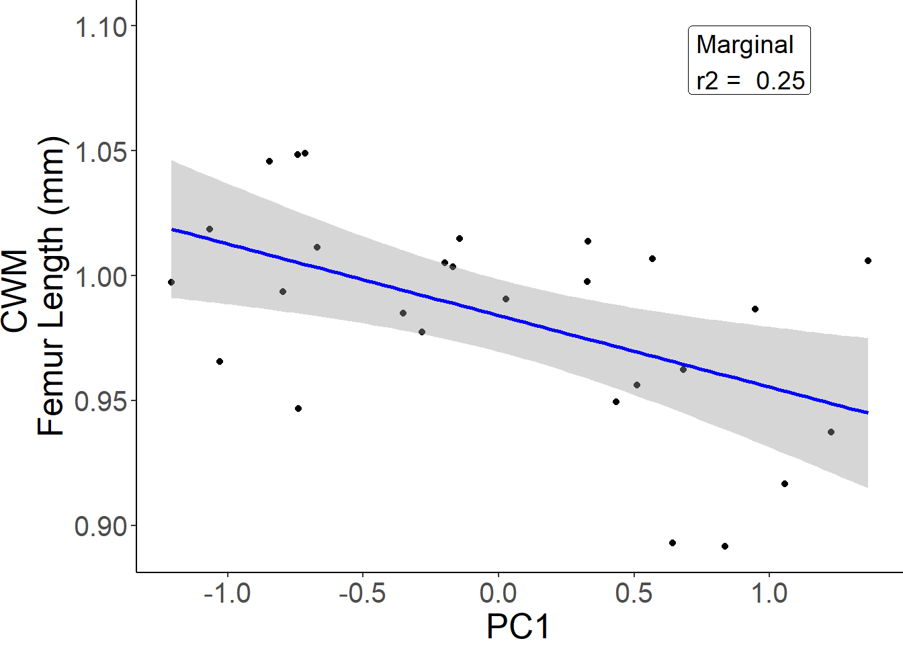
fit1 <- glmmTMB(Headl.w ~ PC1+ (1|Site), cwm)
summary(fit1) Family: gaussian ( identity )
Formula: Headl.w ~ PC1 + (1 | Site)
Data: cwm
AIC BIC logLik deviance df.resid
-126.5 -121.4 67.3 -134.5 23
Random effects:
Conditional model:
Groups Name Variance Std.Dev.
Site (Intercept) 0.0001759 0.01326
Residual 0.0002825 0.01681
Number of obs: 27, groups: Site, 9
Dispersion estimate for gaussian family (sigma^2): 0.000282
Conditional model:
Estimate Std. Error z value Pr(>|z|)
(Intercept) 0.820070 0.005478 149.70 <2e-16 ***
PC1 -0.001399 0.007394 -0.19 0.85
---
Signif. codes: 0 '***' 0.001 '**' 0.01 '*' 0.05 '.' 0.1 ' ' 1t <- model_performance(fit1)
c <- ggplot(fit1$frame, aes_string(x = names(fit1$frame)[2], y = names(fit1$frame)[1])) +
geom_point() +
stat_smooth(method = "lm", col = "#3C4142", linetype = "dashed", se = FALSE) +
geom_label(aes(x = 0.65, y = 0.86),vjust=1, hjust = 0,
label = paste("Marginal \nr2 = ",signif(t$R2_marginal, 2)), size = 5) + ylab("CWM \nHead Length (mm)") + xlab("PC1") + theme(panel.grid.major = element_blank(), panel.grid.minor = element_blank(),
panel.background = element_blank(), axis.line = element_line(colour = "black")) + theme(plot.margin=grid::unit(c(0,0,0,0), "mm"))+ theme(text = element_text(size = 19))
c`geom_smooth()` using formula = 'y ~ x'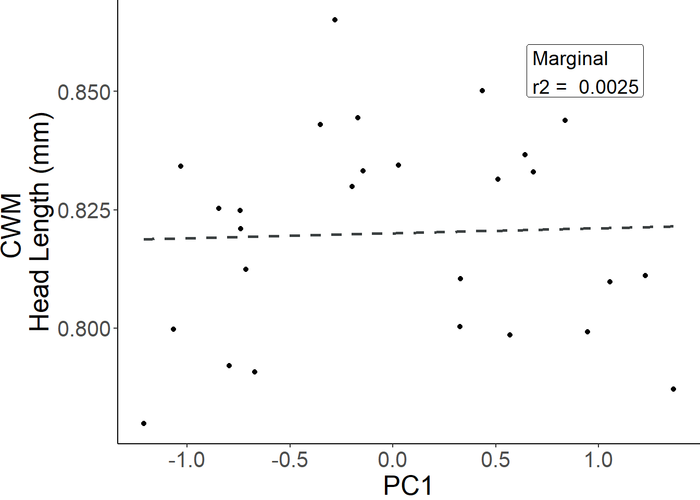
fit1 <- glmmTMB(Eyel.w ~ PC1 + (1|Site), cwm)
summary(fit1) Family: gaussian ( identity )
Formula: Eyel.w ~ PC1 + (1 | Site)
Data: cwm
AIC BIC logLik deviance df.resid
-155.1 -149.9 81.6 -163.1 23
Random effects:
Conditional model:
Groups Name Variance Std.Dev.
Site (Intercept) 7.723e-05 0.008788
Residual 9.146e-05 0.009563
Number of obs: 27, groups: Site, 9
Dispersion estimate for gaussian family (sigma^2): 9.15e-05
Conditional model:
Estimate Std. Error z value Pr(>|z|)
(Intercept) 0.166355 0.003460 48.09 <2e-16 ***
PC1 0.002873 0.004589 0.63 0.531
---
Signif. codes: 0 '***' 0.001 '**' 0.01 '*' 0.05 '.' 0.1 ' ' 1t <- model_performance(fit1)
d <- ggplot(fit1$frame, aes_string(x = names(fit1$frame)[2], y = names(fit1$frame)[1])) +
geom_point() +
stat_smooth(method = "lm", col = "#3C4142", linetype = "dashed", se = FALSE) +
geom_label(aes(x = 0.65, y = 0.2),vjust=1, hjust = 0,
label = paste("Marginal \nr2 = ",signif(t$R2_marginal, 2)), size = 5) + ylab("CWM \nEye Length (mm)") + xlab("PC1") + theme(panel.grid.major = element_blank(), panel.grid.minor = element_blank(),
panel.background = element_blank(), axis.line = element_line(colour = "black")) + theme(plot.margin=grid::unit(c(0,0,0,0), "mm"))+ theme(text = element_text(size = 19))
d`geom_smooth()` using formula = 'y ~ x'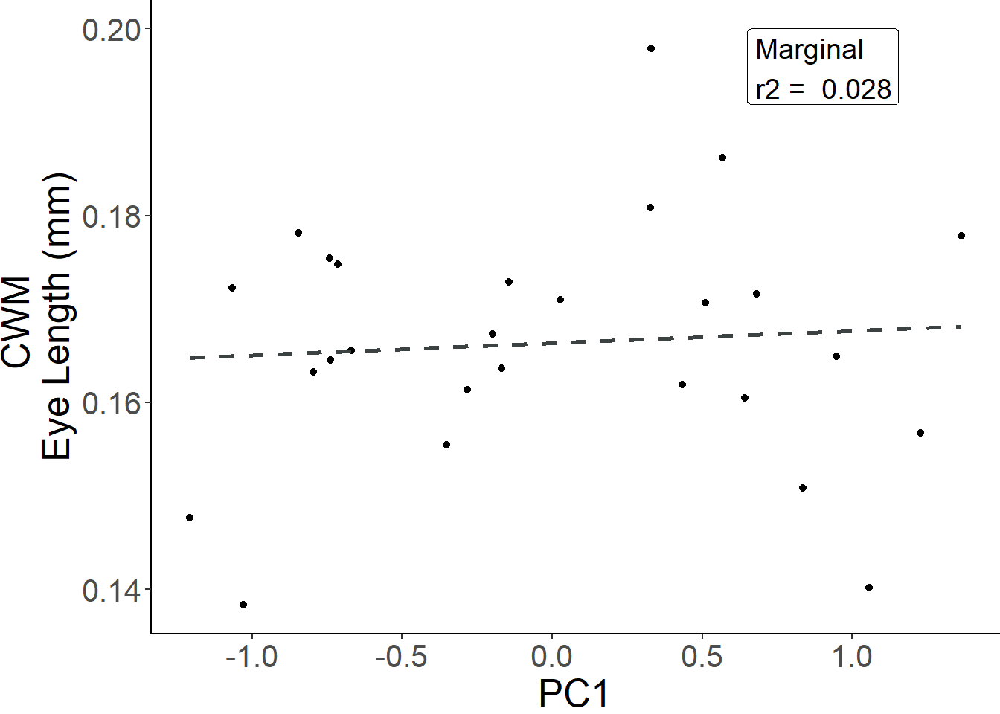
fit1 <- glmmTMB(Headw.w ~ PC1 + (1|Site), cwm)
summary(fit1) Family: gaussian ( identity )
Formula: Headw.w ~ PC1 + (1 | Site)
Data: cwm
AIC BIC logLik deviance df.resid
-116.0 -110.8 62.0 -124.0 23
Random effects:
Conditional model:
Groups Name Variance Std.Dev.
Site (Intercept) 0.0004533 0.02129
Residual 0.0003491 0.01869
Number of obs: 27, groups: Site, 9
Dispersion estimate for gaussian family (sigma^2): 0.000349
Conditional model:
Estimate Std. Error z value Pr(>|z|)
(Intercept) 0.740925 0.007956 93.13 <2e-16 ***
PC1 -0.002018 0.010420 -0.19 0.846
---
Signif. codes: 0 '***' 0.001 '**' 0.01 '*' 0.05 '.' 0.1 ' ' 1t <- model_performance(fit1)
e <- ggplot(fit1$frame, aes_string(x = names(fit1$frame)[2], y = names(fit1$frame)[1])) +
geom_point() +
stat_smooth(method = "lm", col = "#3C4142", linetype = "dashed", se = FALSE) +
geom_label(aes(x = 0.65, y = 0.8),vjust=1, hjust = 0,
label = paste("Marginal \nr2 = ",signif(t$R2_marginal, 2)), size = 5) + xlab("") + theme(panel.grid.major = element_blank(), panel.grid.minor = element_blank(),
panel.background = element_blank(), axis.line = element_line(colour = "black")) + theme(plot.margin=grid::unit(c(0,0,0,0), "mm")) + ylab("CWM \nHead Width (mm)")+ xlab("PC1") + theme(text = element_text(size = 19))
e`geom_smooth()` using formula = 'y ~ x'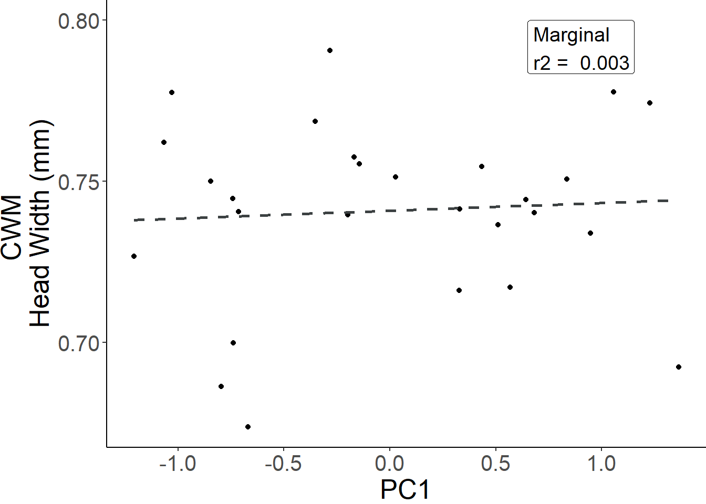
fit1 <- glmmTMB(Scape.w ~ PC1 + (1|Site), cwm)
summary(fit1) Family: gaussian ( identity )
Formula: Scape.w ~ PC1 + (1 | Site)
Data: cwm
AIC BIC logLik deviance df.resid
-82.6 -77.5 45.3 -90.6 23
Random effects:
Conditional model:
Groups Name Variance Std.Dev.
Site (Intercept) 0.001544 0.03929
Residual 0.001206 0.03473
Number of obs: 27, groups: Site, 9
Dispersion estimate for gaussian family (sigma^2): 0.00121
Conditional model:
Estimate Std. Error z value Pr(>|z|)
(Intercept) 0.768365 0.014703 52.26 <2e-16 ***
PC1 -0.005763 0.021260 -0.27 0.786
---
Signif. codes: 0 '***' 0.001 '**' 0.01 '*' 0.05 '.' 0.1 ' ' 1t <- model_performance(fit1)
f <- ggplot(fit1$frame, aes_string(x = names(fit1$frame)[2], y = names(fit1$frame)[1])) +
geom_point() +
stat_smooth(method = "lm", col = "#3C4142", linetype = "dashed", se = FALSE) +
geom_label(aes(x = 0.7, y = 0.85),vjust=1, hjust = 0,
label = paste("Marginal \nr2 = ",signif(t$R2_marginal, 2)), size = 5) + ylab("CWM \nScape Length (mm)") + xlab("PC1") + theme(panel.grid.major = element_blank(), panel.grid.minor = element_blank(),
panel.background = element_blank(), axis.line = element_line(colour = "black")) + theme(plot.margin=grid::unit(c(0,0,0,0), "mm")) + theme(text = element_text(size = 19))
f`geom_smooth()` using formula = 'y ~ x'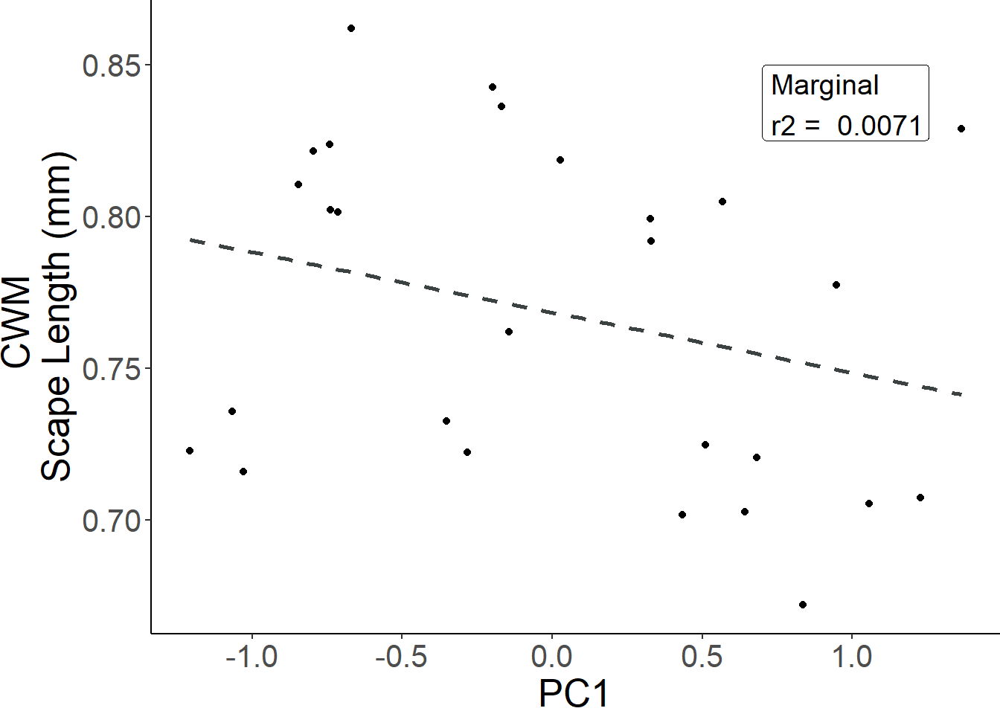
fit1 <- glmmTMB(Mandible.w ~ PC1+ (1|Site), cwm)
summary(fit1) Family: gaussian ( identity )
Formula: Mandible.w ~ PC1 + (1 | Site)
Data: cwm
AIC BIC logLik deviance df.resid
-141.6 -136.4 74.8 -149.6 23
Random effects:
Conditional model:
Groups Name Variance Std.Dev.
Site (Intercept) 0.0001323 0.01150
Residual 0.0001490 0.01221
Number of obs: 27, groups: Site, 9
Dispersion estimate for gaussian family (sigma^2): 0.000149
Conditional model:
Estimate Std. Error z value Pr(>|z|)
(Intercept) 0.445969 0.004496 99.19 <2e-16 ***
PC1 -0.003474 0.005745 -0.60 0.545
---
Signif. codes: 0 '***' 0.001 '**' 0.01 '*' 0.05 '.' 0.1 ' ' 1t <- model_performance(fit1)
g <- ggplot(fit1$frame, aes_string(x = names(fit1$frame)[2], y = names(fit1$frame)[1])) +
geom_point() +
stat_smooth(method = "lm", col = "#3C4142", linetype = "dashed", se = FALSE) +
geom_label(aes(x = 0.65, y = 0.5),vjust=1, hjust = 0,
label = paste("Marginal \nr2 = ",signif(t$R2_marginal, 2)), size = 5) + ylab("CWM \nMandible Length (mm)") + xlab("PC1") + theme(panel.grid.major = element_blank(), panel.grid.minor = element_blank(),
panel.background = element_blank(), axis.line = element_line(colour = "black")) + theme(plot.margin=grid::unit(c(0,0,0,0), "mm"))+ theme(text = element_text(size = 19))
g`geom_smooth()` using formula = 'y ~ x'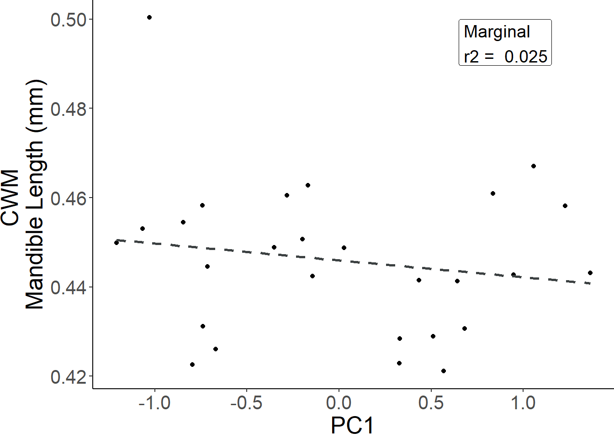
plots <- list(a,b,c,d,e,f,g)
grobs <- list()
widths <- list()
for (i in 1:length(plots)){
grobs[[i]] <- ggplotGrob(plots[[i]])
widths[[i]] <- grobs[[i]]$widths[2:5]
}`geom_smooth()` using formula = 'y ~ x'
`geom_smooth()` using formula = 'y ~ x'
`geom_smooth()` using formula = 'y ~ x'
`geom_smooth()` using formula = 'y ~ x'
`geom_smooth()` using formula = 'y ~ x'
`geom_smooth()` using formula = 'y ~ x'
`geom_smooth()` using formula = 'y ~ x'maxwidth <- do.call(grid::unit.pmax, widths)
for (i in 1:length(grobs)){
grobs[[i]]$widths[2:5] <- as.list(maxwidth)
}
p <- do.call("grid.arrange", c(grobs, ncol = 2))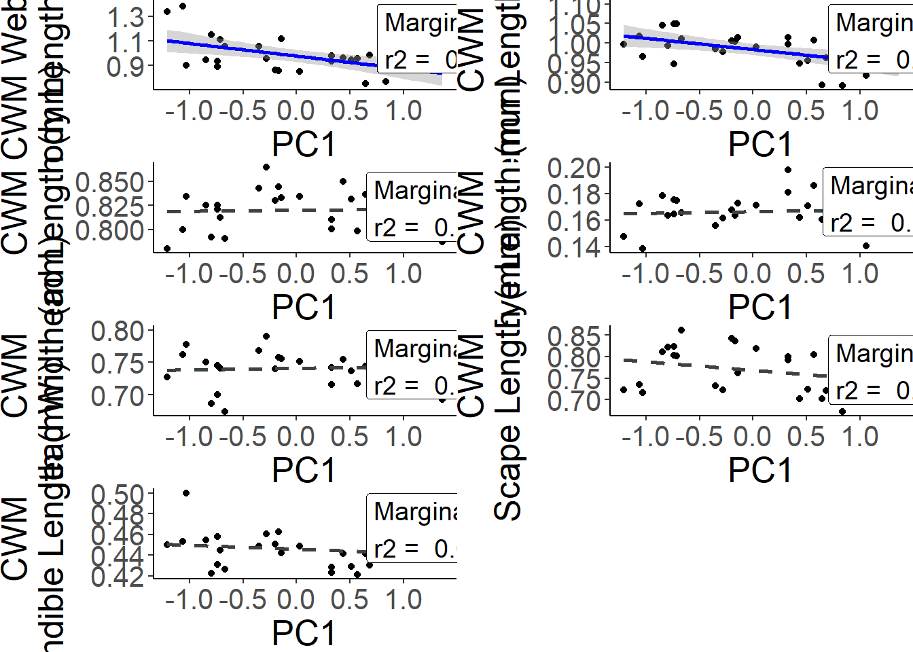
pTableGrob (4 x 2) "arrange": 7 grobs
z cells name grob
1 1 (1-1,1-1) arrange gtable[layout]
2 2 (1-1,2-2) arrange gtable[layout]
3 3 (2-2,1-1) arrange gtable[layout]
4 4 (2-2,2-2) arrange gtable[layout]
5 5 (3-3,1-1) arrange gtable[layout]
6 6 (3-3,2-2) arrange gtable[layout]
7 7 (4-4,1-1) arrange gtable[layout]CWM ~ PC2
fit1 <- glmmTMB(Webers ~ PC2 + (1|Site), cwm)
summary(fit1) Family: gaussian ( identity )
Formula: Webers ~ PC2 + (1 | Site)
Data: cwm
AIC BIC logLik deviance df.resid
-24.6 -19.4 16.3 -32.6 23
Random effects:
Conditional model:
Groups Name Variance Std.Dev.
Site (Intercept) 0.006141 0.07837
Residual 0.013048 0.11423
Number of obs: 27, groups: Site, 9
Dispersion estimate for gaussian family (sigma^2): 0.013
Conditional model:
Estimate Std. Error z value Pr(>|z|)
(Intercept) 0.97834 0.03414 28.655 <2e-16 ***
PC2 0.03600 0.03856 0.934 0.35
---
Signif. codes: 0 '***' 0.001 '**' 0.01 '*' 0.05 '.' 0.1 ' ' 1performance(fit1)# Indices of model performance
AIC | AICc | BIC | R2 (cond.) | R2 (marg.) | ICC | RMSE | Sigma
-----------------------------------------------------------------------------
-24.610 | -22.792 | -19.426 | 0.346 | 0.038 | 0.320 | 0.102 | 0.114t <- model_performance(fit1)
a <- ggplot(fit1$frame, aes_string(x = names(fit1$frame)[2], y = names(fit1$frame)[1])) +
geom_point() +
stat_smooth(method = "lm", col = "#3C4142", linetype = "dashed", se = FALSE) +
geom_label(aes(x = 0.75, y = 1.3),vjust=1, hjust = 0,
label = paste("Marginal \nr2 = ",signif(t$R2_marginal, 2)), size = 5) + ylab("CWM Weber's \nBody Length (mm)") + xlab("PC2") + theme(panel.grid.major = element_blank(), panel.grid.minor = element_blank(),
panel.background = element_blank(), axis.line = element_line(colour = "black")) + theme(plot.margin=grid::unit(c(0,2,0,0), "mm")) + theme(text = element_text(size = 19))
a`geom_smooth()` using formula = 'y ~ x'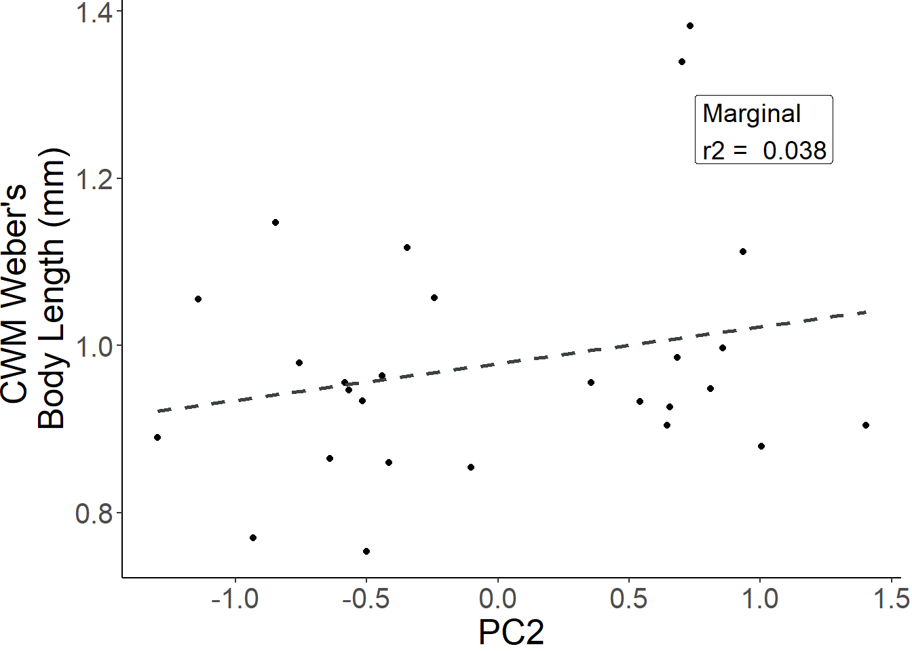
fit1 <- glmmTMB(Femur.w ~ PC2 + (1|Site), cwm)
summary(fit1) Family: gaussian ( identity )
Formula: Femur.w ~ PC2 + (1 | Site)
Data: cwm
AIC BIC logLik deviance df.resid
-97.0 -91.8 52.5 -105.0 23
Random effects:
Conditional model:
Groups Name Variance Std.Dev.
Site (Intercept) 0.0009476 0.03078
Residual 0.0006969 0.02640
Number of obs: 27, groups: Site, 9
Dispersion estimate for gaussian family (sigma^2): 0.000697
Conditional model:
Estimate Std. Error z value Pr(>|z|)
(Intercept) 0.98407 0.01145 85.95 <2e-16 ***
PC2 0.02150 0.01064 2.02 0.0432 *
---
Signif. codes: 0 '***' 0.001 '**' 0.01 '*' 0.05 '.' 0.1 ' ' 1performance(fit1)# Indices of model performance
AIC | AICc | BIC | R2 (cond.) | R2 (marg.) | ICC | RMSE | Sigma
-----------------------------------------------------------------------------
-97.012 | -95.194 | -91.828 | 0.636 | 0.142 | 0.576 | 0.023 | 0.026t <- model_performance(fit1)
b <- ggplot(fit1$frame, aes_string(x = names(fit1$frame)[2], y = names(fit1$frame)[1])) +
geom_point() +
stat_smooth(method = "lm", col = "blue") +
geom_label(aes(x = 0.65, y = 1.1),vjust=1, hjust = 0,
label = paste("Marginal \nr2 = ",signif(t$R2_marginal, 2)), size = 5) + ylab("CWM \nFemur Length (mm)") + xlab("PC2") + theme(panel.grid.major = element_blank(), panel.grid.minor = element_blank(),
panel.background = element_blank(), axis.line = element_line(colour = "black")) + theme(plot.margin=grid::unit(c(0,2,0,0), "mm"))+ theme(text = element_text(size = 19))
b`geom_smooth()` using formula = 'y ~ x'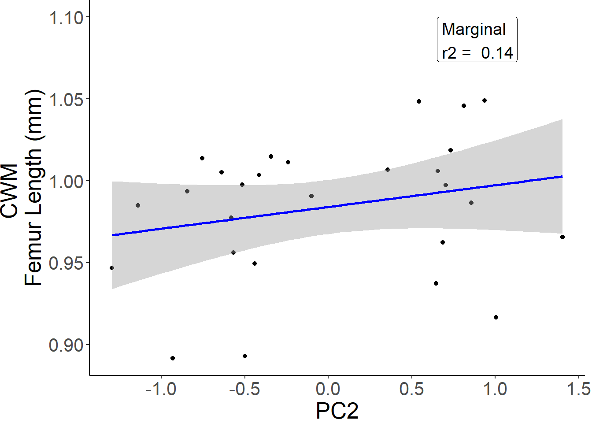
fit1 <- glmmTMB(Headl.w ~ PC2 + (1|Site), cwm)
summary(fit1) Family: gaussian ( identity )
Formula: Headl.w ~ PC2 + (1 | Site)
Data: cwm
AIC BIC logLik deviance df.resid
-130.4 -125.2 69.2 -138.4 23
Random effects:
Conditional model:
Groups Name Variance Std.Dev.
Site (Intercept) 0.0001528 0.01236
Residual 0.0002444 0.01563
Number of obs: 27, groups: Site, 9
Dispersion estimate for gaussian family (sigma^2): 0.000244
Conditional model:
Estimate Std. Error z value Pr(>|z|)
(Intercept) 0.820070 0.005102 160.72 <2e-16 ***
PC2 -0.011191 0.005474 -2.04 0.0409 *
---
Signif. codes: 0 '***' 0.001 '**' 0.01 '*' 0.05 '.' 0.1 ' ' 1performance(fit1)# Indices of model performance
AIC | AICc | BIC | R2 (cond.) | R2 (marg.) | ICC | RMSE | Sigma
--------------------------------------------------------------------------------
-130.422 | -128.604 | -125.239 | 0.481 | 0.156 | 0.385 | 0.014 | 0.016t <- model_performance(fit1)
c <- ggplot(fit1$frame, aes_string(x = names(fit1$frame)[2], y = names(fit1$frame)[1])) +
geom_point() +
stat_smooth(method = "lm", col = "blue") +
geom_label(aes(x = 0.65, y = 0.9),vjust=1, hjust = 0,
label = paste("Marginal \nr2 = ",signif(t$R2_marginal, 2)), size = 5) + ylab("CWM \nHead Length (mm)") + xlab("PC2") + theme(panel.grid.major = element_blank(), panel.grid.minor = element_blank(),
panel.background = element_blank(), axis.line = element_line(colour = "black")) + theme(plot.margin=grid::unit(c(0,2,0,0), "mm"))+ theme(text = element_text(size = 19))
c`geom_smooth()` using formula = 'y ~ x'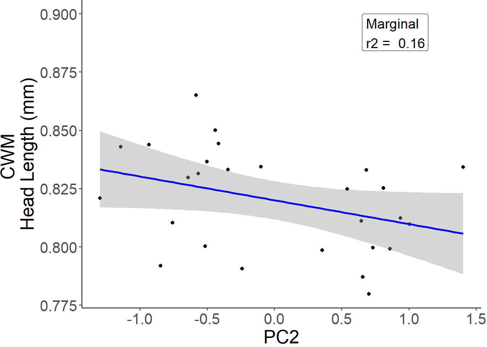
fit1 <- glmmTMB(Eyel.w ~ PC2 + (1|Site), cwm)
summary(fit1) Family: gaussian ( identity )
Formula: Eyel.w ~ PC2 + (1 | Site)
Data: cwm
AIC BIC logLik deviance df.resid
-154.7 -149.5 81.4 -162.7 23
Random effects:
Conditional model:
Groups Name Variance Std.Dev.
Site (Intercept) 7.456e-05 0.008635
Residual 9.429e-05 0.009711
Number of obs: 27, groups: Site, 9
Dispersion estimate for gaussian family (sigma^2): 9.43e-05
Conditional model:
Estimate Std. Error z value Pr(>|z|)
(Intercept) 0.1663546 0.0034318 48.47 <2e-16 ***
PC2 0.0002098 0.0037662 0.06 0.956
---
Signif. codes: 0 '***' 0.001 '**' 0.01 '*' 0.05 '.' 0.1 ' ' 1performance(fit1)# Indices of model performance
AIC | AICc | BIC | R2 (cond.) | R2 (marg.) | ICC | RMSE | Sigma
--------------------------------------------------------------------------------
-154.702 | -152.884 | -149.519 | 0.442 | 1.533e-04 | 0.442 | 0.008 | 0.010t <- model_performance(fit1)
d <- ggplot(fit1$frame, aes_string(x = names(fit1$frame)[2], y = names(fit1$frame)[1])) +
geom_point() +
stat_smooth(method = "lm", col = "#3C4142", linetype = "dashed", se = FALSE) +
geom_label(aes(x = 0.65, y = 0.2),vjust=1, hjust = 0,
label = paste("Marginal \nr2 = ",signif(t$R2_marginal, 2)), size = 5) + ylab("CWM \nEye Length (mm)") + xlab("PC2") + theme(panel.grid.major = element_blank(), panel.grid.minor = element_blank(),
panel.background = element_blank(), axis.line = element_line(colour = "black")) + theme(plot.margin=grid::unit(c(0,2,0,0), "mm"))+ theme(text = element_text(size = 19))
d`geom_smooth()` using formula = 'y ~ x'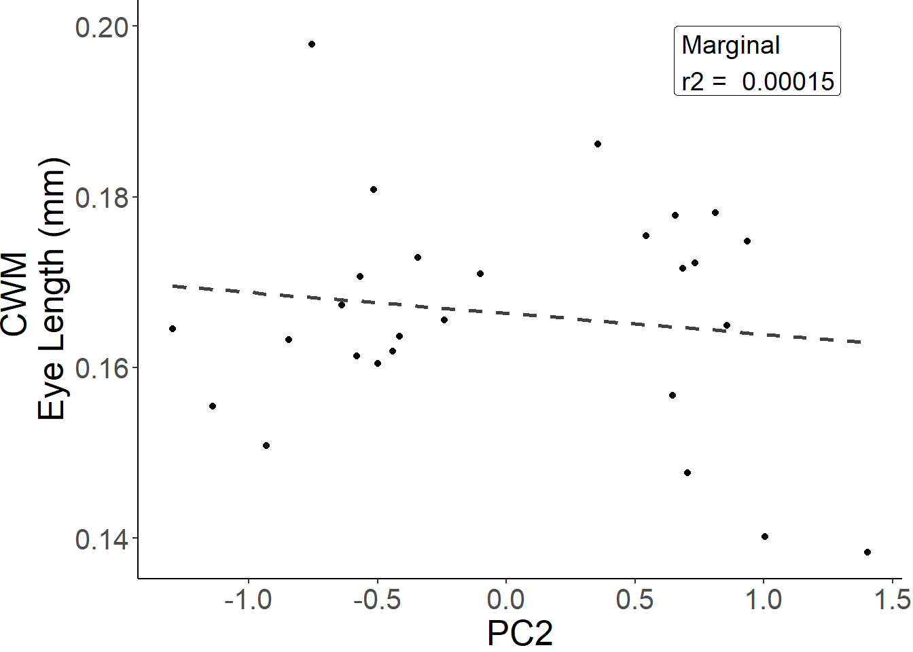
fit1 <- glmmTMB(Headw.w ~ PC2 + (1|Site), cwm)
summary(fit1) Family: gaussian ( identity )
Formula: Headw.w ~ PC2 + (1 | Site)
Data: cwm
AIC BIC logLik deviance df.resid
-116.3 -111.2 62.2 -124.3 23
Random effects:
Conditional model:
Groups Name Variance Std.Dev.
Site (Intercept) 0.0005339 0.02311
Residual 0.0003228 0.01797
Number of obs: 27, groups: Site, 9
Dispersion estimate for gaussian family (sigma^2): 0.000323
Conditional model:
Estimate Std. Error z value Pr(>|z|)
(Intercept) 0.740925 0.008443 87.76 <2e-16 ***
PC2 -0.005258 0.008349 -0.63 0.529
---
Signif. codes: 0 '***' 0.001 '**' 0.01 '*' 0.05 '.' 0.1 ' ' 1performance(fit1)# Indices of model performance
AIC | AICc | BIC | R2 (cond.) | R2 (marg.) | ICC | RMSE | Sigma
--------------------------------------------------------------------------------
-116.350 | -114.531 | -111.166 | 0.630 | 0.019 | 0.623 | 0.015 | 0.018t <- model_performance(fit1)
e <- ggplot(fit1$frame, aes_string(x = names(fit1$frame)[2], y = names(fit1$frame)[1])) +
geom_point() +
stat_smooth(method = "lm", col = "#3C4142", linetype = "dashed", se = FALSE) +
geom_label(aes(x = 0.75, y = 0.8),vjust=1, hjust = 0,
label = paste("Marginal \nr2 = ",signif(t$R2_marginal, 2)), size = 5) + xlab("PC2") + theme(panel.grid.major = element_blank(), panel.grid.minor = element_blank(),
panel.background = element_blank(), axis.line = element_line(colour = "black")) + theme(plot.margin=grid::unit(c(0,2,0,0), "mm")) + ylab("CWM \nHead Width (mm)")+ theme(text = element_text(size = 19))
e`geom_smooth()` using formula = 'y ~ x'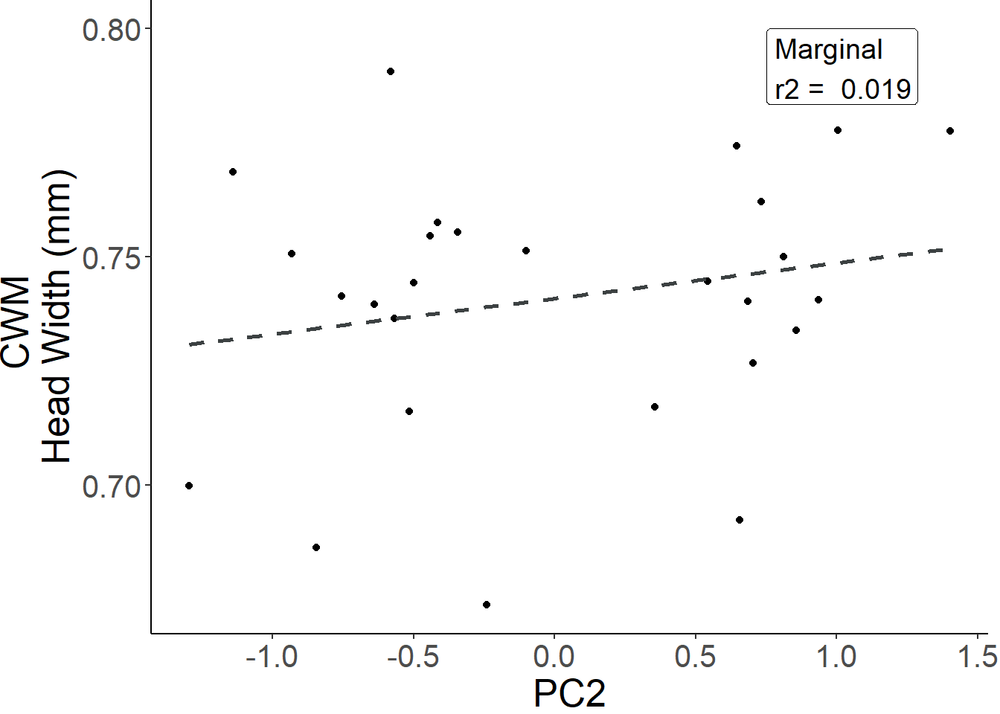
fit1 <- glmmTMB(Scape.w ~ PC2 + (1|Site), cwm)
summary(fit1) Family: gaussian ( identity )
Formula: Scape.w ~ PC2 + (1 | Site)
Data: cwm
AIC BIC logLik deviance df.resid
-85.7 -80.5 46.9 -93.7 23
Random effects:
Conditional model:
Groups Name Variance Std.Dev.
Site (Intercept) 0.0026028 0.05102
Residual 0.0008359 0.02891
Number of obs: 27, groups: Site, 9
Dispersion estimate for gaussian family (sigma^2): 0.000836
Conditional model:
Estimate Std. Error z value Pr(>|z|)
(Intercept) 0.76836 0.01789 42.94 <2e-16 ***
PC2 0.02669 0.01377 1.94 0.0526 .
---
Signif. codes: 0 '***' 0.001 '**' 0.01 '*' 0.05 '.' 0.1 ' ' 1performance(fit1)# Indices of model performance
AIC | AICc | BIC | R2 (cond.) | R2 (marg.) | ICC | RMSE | Sigma
-----------------------------------------------------------------------------
-85.702 | -83.884 | -80.519 | 0.783 | 0.109 | 0.757 | 0.024 | 0.029t <- model_performance(fit1)
f <- ggplot(fit1$frame, aes_string(x = names(fit1$frame)[2], y = names(fit1$frame)[1])) +
geom_point() +
stat_smooth(method = "lm", col = "blue") +
geom_label(aes(x = 0.75, y = 0.85),vjust=1, hjust = 0,
label = paste("Marginal \nr2 = ",signif(t$R2_marginal, 2)), size = 5) + ylab("CWM \nScape Length (mm)") + xlab("PC2") + theme(panel.grid.major = element_blank(), panel.grid.minor = element_blank(),
panel.background = element_blank(), axis.line = element_line(colour = "black")) + theme(plot.margin=grid::unit(c(0,2,0,0), "mm")) + theme(text = element_text(size = 19))
f`geom_smooth()` using formula = 'y ~ x'
fit1 <- glmmTMB(Mandible.w ~ PC2 + (1|Site), cwm)
summary(fit1) Family: gaussian ( identity )
Formula: Mandible.w ~ PC2 + (1 | Site)
Data: cwm
AIC BIC logLik deviance df.resid
-143.0 -137.9 75.5 -151.0 23
Random effects:
Conditional model:
Groups Name Variance Std.Dev.
Site (Intercept) 7.941e-05 0.008911
Residual 1.609e-04 0.012684
Number of obs: 27, groups: Site, 9
Dispersion estimate for gaussian family (sigma^2): 0.000161
Conditional model:
Estimate Std. Error z value Pr(>|z|)
(Intercept) 0.445969 0.003845 115.99 <2e-16 ***
PC2 0.006741 0.004867 1.39 0.166
---
Signif. codes: 0 '***' 0.001 '**' 0.01 '*' 0.05 '.' 0.1 ' ' 1performance(fit1)# Indices of model performance
AIC | AICc | BIC | R2 (cond.) | R2 (marg.) | ICC | RMSE | Sigma
--------------------------------------------------------------------------------
-143.040 | -141.221 | -137.856 | 0.398 | 0.100 | 0.330 | 0.011 | 0.013g <- ggplot(fit1$frame, aes_string(x = names(fit1$frame)[2], y = names(fit1$frame)[1])) +
geom_point() +
stat_smooth(method = "lm", col = "#3C4142", linetype = "dashed") +
geom_label(aes(x = 0.75, y = 0.5),vjust=1, hjust = 0,
label = paste("Marginal \nr2 = ",signif(t$R2_marginal, 2)), size = 5) + ylab("CWM \nMandible Length (mm)") + xlab("PC2") + theme(panel.grid.major = element_blank(), panel.grid.minor = element_blank(),
panel.background = element_blank(), axis.line = element_line(colour = "black")) + theme(plot.margin=grid::unit(c(0,1,0,0), "mm"))+ theme(text = element_text(size = 19))
g`geom_smooth()` using formula = 'y ~ x'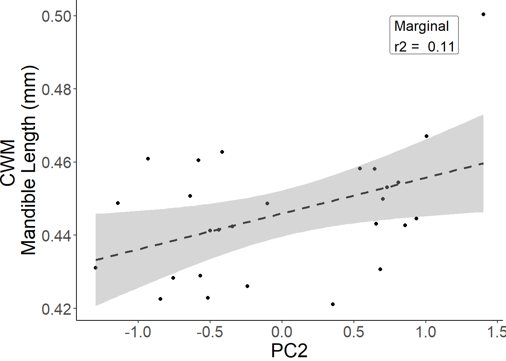
plots <- list(a,b,c,d,e,f,g)
grobs <- list()
widths <- list()
for (i in 1:length(plots)){
grobs[[i]] <- ggplotGrob(plots[[i]])
widths[[i]] <- grobs[[i]]$widths[2:5]
}`geom_smooth()` using formula = 'y ~ x'
`geom_smooth()` using formula = 'y ~ x'
`geom_smooth()` using formula = 'y ~ x'
`geom_smooth()` using formula = 'y ~ x'
`geom_smooth()` using formula = 'y ~ x'
`geom_smooth()` using formula = 'y ~ x'
`geom_smooth()` using formula = 'y ~ x'maxwidth <- do.call(grid::unit.pmax, widths)
for (i in 1:length(grobs)){
grobs[[i]]$widths[2:5] <- as.list(maxwidth)
}
p <- do.call("grid.arrange", c(grobs, ncol = 2))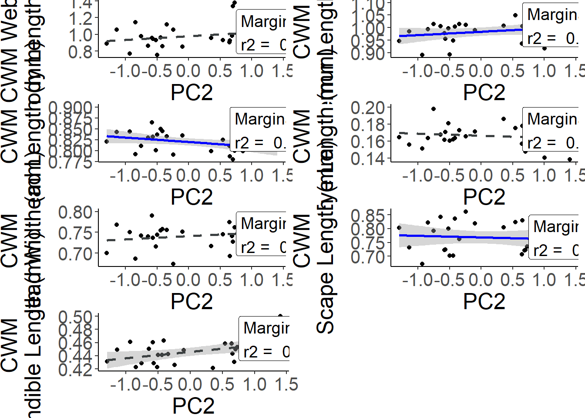
pTableGrob (4 x 2) "arrange": 7 grobs
z cells name grob
1 1 (1-1,1-1) arrange gtable[layout]
2 2 (1-1,2-2) arrange gtable[layout]
3 3 (2-2,1-1) arrange gtable[layout]
4 4 (2-2,2-2) arrange gtable[layout]
5 5 (3-3,1-1) arrange gtable[layout]
6 6 (3-3,2-2) arrange gtable[layout]
7 7 (4-4,1-1) arrange gtable[layout]ITV
Intraspecific trait variation
Body size
itv <- data.frame()
#body size
webers <- traits %>% filter(Trait == "Webers")
partition <- aov(Measure~X.1, data = webers)
summary(partition) Df Sum Sq Mean Sq F value Pr(>F)
X.1 10 52.89 5.289 295.8 <2e-16 ***
Residuals 252 4.51 0.018
---
Signif. codes: 0 '***' 0.001 '**' 0.01 '*' 0.05 '.' 0.1 ' ' 1#ITV is a low component of overall variability
logWebers <- log(webers$Measure)
modPart <- lme(logWebers ~ 1, random = ~ 1 | Site / X.1, data = webers, na.action = na.omit)
varcompWeber <- ape::varcomp(modPart, scale = 1)
varcompWeber Site X.1 Within
2.839742e-09 9.079277e-01 9.207234e-02
attr(,"class")
[1] "varcomp"#body size differences between individuals of the same species within a site account for 9.2% variation
#differences among species within a site account for 90.7%
#differences among species between sites accounts for 0 %Femur length
# relative leg length
femur <- traits %>% filter(Trait == "Femur.w")
partition <- aov(Measure~X.1, data = femur)
summary(partition) Df Sum Sq Mean Sq F value Pr(>F)
X.1 10 2.085 0.20850 43.34 <2e-16 ***
Residuals 251 1.208 0.00481
---
Signif. codes: 0 '***' 0.001 '**' 0.01 '*' 0.05 '.' 0.1 ' ' 1#ITV is 1.208/3.298 = 36.6% of variation
logFemur <- log(femur$Measure)
modPart <- lme(logFemur ~ 1, random = ~ 1 | Site / X.1, data = femur, na.action = na.omit)
varcompFemur <- ape::varcomp(modPart, scale = 1)
varcompFemur Site X.1 Within
0.02389404 0.66474425 0.31136170
attr(,"class")
[1] "varcomp"#relative femur length differences between individuals of the same species within a site account for 31% variation
#differences among species within a site account for 66.7%
#differences among species between sites accounts for 2.4 %Scape length
#scape length
scape <- traits %>% filter(Trait == "Scape.w")
partition <- aov(Measure~X.1, data = scape)
summary(partition) Df Sum Sq Mean Sq F value Pr(>F)
X.1 10 3.926 0.3926 139.6 <2e-16 ***
Residuals 251 0.706 0.0028
---
Signif. codes: 0 '***' 0.001 '**' 0.01 '*' 0.05 '.' 0.1 ' ' 1#ITV is 0.706/4.632 = 15.2 % of variation
logScape <- log(scape$Measure)
modPart <- lme(logScape ~ 1, random = ~ 1 | Site / X.1, data = scape, na.action = na.omit)
varcompScape <- ape::varcomp(modPart, scale = 1)
varcompScape Site X.1 Within
5.04798e-10 8.44903e-01 1.55097e-01
attr(,"class")
[1] "varcomp"#relative scape length differences between individuals of the same species within a site account for 15% variation
#differences among species within a site account for 84.5%
#differences among species between sites accounts for 0%Mandible length
#mandible length
mandible <- traits %>% filter(Trait == "Mandible.w")
partition <- aov(Measure~X.1, data = mandible)
summary(partition) Df Sum Sq Mean Sq F value Pr(>F)
X.1 10 0.4122 0.04122 29.74 <2e-16 ***
Residuals 251 0.3478 0.00139
---
Signif. codes: 0 '***' 0.001 '**' 0.01 '*' 0.05 '.' 0.1 ' ' 1#ITV is 0.3478/0.76 = 45.7 % of variation
logMandible <- log(mandible$Measure)
modPart <- lme(logMandible ~ 1, random = ~ 1 | Site / X.1, data = mandible, na.action = na.omit)
varcompMandible <- ape::varcomp(modPart, scale = 1)
varcompMandible Site X.1 Within
1.246728e-09 6.336859e-01 3.663141e-01
attr(,"class")
[1] "varcomp"#relative mandible length differences between individuals of the same species within a site account for 36.6% variation
#differences among species within a site account for 63%
#differences among species between sites accounts for 0%Eye length
#eye length
el <- traits %>% filter(Trait == "Eyel.w")
partition <- aov(Measure~X.1, data = el)
summary(partition) Df Sum Sq Mean Sq F value Pr(>F)
X.1 10 0.24415 0.024415 92.42 <2e-16 ***
Residuals 251 0.06631 0.000264
---
Signif. codes: 0 '***' 0.001 '**' 0.01 '*' 0.05 '.' 0.1 ' ' 1#ITV is 0.06/0.31 = 21 % of variation
logEL <- log(el$Measure)
modPart <- lme(logEL ~ 1, random = ~ 1 | Site / X.1, data = el, na.action = na.omit)
varcompEL <- ape::varcomp(modPart, scale = 1)
varcompEL Site X.1 Within
9.171576e-10 7.595791e-01 2.404209e-01
attr(,"class")
[1] "varcomp"#relative eye length differences between individuals of the same species within a site account for 24% variation
#differences among species within a site account for 75.9%
#differences among species between sites accounts for 0%Head width
#head width
hw <- traits %>% filter(Trait == "Headw.w")
partition <- aov(Measure~X.1, data = hw)
summary(partition) Df Sum Sq Mean Sq F value Pr(>F)
X.1 10 1.3930 0.13930 70.1 <2e-16 ***
Residuals 251 0.4988 0.00199
---
Signif. codes: 0 '***' 0.001 '**' 0.01 '*' 0.05 '.' 0.1 ' ' 1#ITV is 26%
0.49/(0.49+1.39)[1] 0.2606383logHW <- log(hw$Measure)
modPart <- lme(logHW ~ 1, random = ~ 1 | Site / X.1, data = hw, na.action = na.omit)
varcompHW <- ape::varcomp(modPart, scale = 1)
varcompHW Site X.1 Within
2.652055e-10 7.816622e-01 2.183378e-01
attr(,"class")
[1] "varcomp"#relative head width differences between individuals of the same species within a site account for 21.8% variation
#differences among species within a site account for 78.1%
#differences among species between sites accounts for 0%
hl <- traits %>% filter(Trait == "Headl.w")
partition <- aov(Measure~X.1, data = hl)
summary(partition) Df Sum Sq Mean Sq F value Pr(>F)
X.1 10 0.7752 0.07752 26.34 <2e-16 ***
Residuals 251 0.7387 0.00294
---
Signif. codes: 0 '***' 0.001 '**' 0.01 '*' 0.05 '.' 0.1 ' ' 1ITV Plots
itv <- read.csv("raw data/itv.csv")
itv <- itv %>% mutate(total = Species + ITV) %>% mutate(sp.rel = Species/total, itv.rel = ITV/total)
itv = pivot_longer(itv, 5:6, names_to = "rel.itv", values_to = "val")
itv$Trait <- gsub("Weber", "Weber's \nBody Length", itv$Trait)
itv$Trait <- gsub("Femur", "Femur Length", itv$Trait)
itv$Trait <- gsub("Mandible", "Mandible\n Length", itv$Trait)
itv$Trait <- gsub("Scape", "Scape Length", itv$Trait)
itv$Trait <- factor(itv$Trait, levels = unique(itv$Trait[order(itv$val)]))
itv$rel.itv <- factor(itv$rel.itv, levels = c("sp.rel", "itv.rel"))
itv %>% group_by(rel.itv) %>% summarize(mean = mean(val), sd = sd(val))# A tibble: 2 × 3
rel.itv mean sd
<fct> <dbl> <dbl>
1 sp.rel 0.711 0.155
2 itv.rel 0.289 0.155ggplot(itv, aes(Trait, val, fill = rel.itv)) +geom_bar(position="stack", stat = "identity", aes(fill = rel.itv)) + ylab("Proportion of trait variation explained") + scale_fill_manual(values = c("gray", "black"), labels = c("Interspecific", "Intraspecific")) + theme(axis.text=element_text(size=12),
axis.title=element_text(size=14,face="bold")) + theme(panel.grid.major = element_blank(), panel.grid.minor = element_blank(),
panel.background = element_blank(), axis.line = element_line(colour = "black")) + theme(legend.position="top", legend.title = element_blank(), legend.text=element_text(size=12))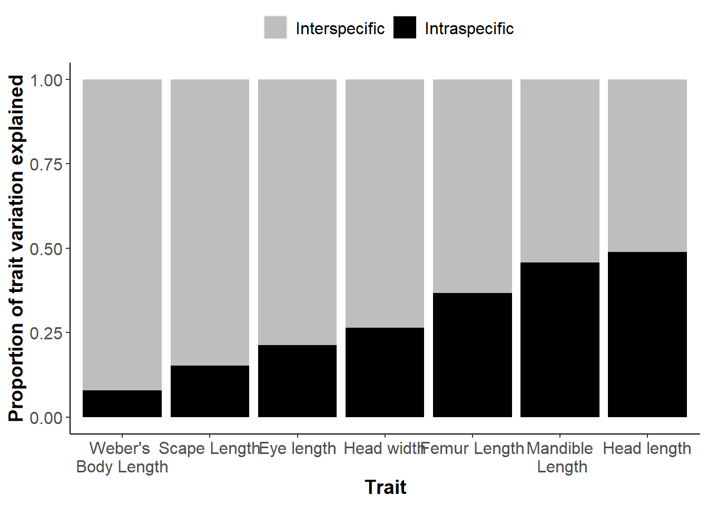